Unlocking single cell spatial omics analyses with scdney
Source:vignettes/workshop_material.Rmd
workshop_material.RmdPresenting Authors
Farhan Ameen\(^{1,2,3}\), Alex Qin\(^{1,2,3}\), Nick Robertson\(^{1,2,3}\), Ellis Patrick\(^{1,2,3}\).
\(^1\) Westmead Institute for
Medical Research, University of Sydney, Australia
\(^2\) Sydney Precision Data Science
Centre, University of Sydney, Australia
\(^3\) School of Mathematics and
Statistics, University of Sydney, Australia
Contact: ellis.patrick@sydney.edu.au
Overview
Understanding the interplay between different types of cells and their immediate environment is critical for understanding the mechanisms of cells themselves and their function in the context of human diseases. Recent advances in high dimensional in situ cytometry technologies have fundamentally revolutionized our ability to observe these complex cellular relationships providing an unprecedented characterisation of cellular heterogeneity in a tissue environment.
Description
In this workshop we will introduce some of the key analytical concepts needed to analyse data from high dimensional spatial omics technologies such as, PhenoCycler, IMC, Xenium and MERFISH. We will show how functionality from our Bioconductor packages simpleSeg, FuseSOM, scClassify, scHot, spicyR, listClust, statial, scFeatures and ClassifyR can be used to address various biological hypotheses. By the end of this workshop attendees will be able to implement and assess some of the key steps of a spatial analysis pipeline including cell segmentation, feature normalisation, cell type identification, microenvironment and cell-state characterisation, spatial hypothesis testing and patient classification. Understanding these key steps will provide attendees with the core skills needed to interrogate the comprehensive spatial information generated by these exciting new technologies.
Pre-requisites
It is expected that students will have:
- basic knowledge of R syntax,
- this workshop will not provide an in-depth description of cell-resolution spatial omics technologies.
R / Bioconductor packages used
Several single cell R packages will be used from the scdney package, for more information visit: https://sydneybiox.github.io/scdney/.
Time outline
| Activity | Time |
|---|---|
| Data visualisation & cell segmentation | 1h 30m |
| Cell type clustering & classification | 1h 30m |
| Spatial analysis & feature generation | 2h |
| Patient Classification | 1h 30m |
Learning objectives
- Understand and visualise spatial omics datasets.
- Identify key biological questions that can be addressed with these technologies and spatial analysis.
- Understand the key analytical steps involved in spatial omics analysis, and perform these steps using R.
- Evaluate the performance of data normalisation and cell segmentation.
- Understand and generate individual feature representations from spatial omics data.
- Develop appreciation on how to assess performance of classification models.
- Perform disease outcome prediction using the feature representation and robust classification framework.
Setup
Installation
if (!requireNamespace("BiocManager", quietly = TRUE)) {
install.packages("BiocManager")
}
BiocManager::install(c( "simpleSeg", "cytomapper", "scClassify", "scHOT", "FuseSOM","glmnet", "spicyR", "lisaClust","Statial", "scFeatures", "ClassifyR", "tidyverse", "scater", "SingleCellExperiment", "STexampleData", "SpatialDatasets", "tidySingleCellExperiment", "scuttle", "batchelor"))Download datasets
Please download these datasets before you start the workshop
#Download data now
spe <- STexampleData::seqFISH_mouseEmbryo()
kerenSPE = SpatialDatasets::spe_Keren_2018() Load packages
# library(ScdneySpatial)
# packages from scdney
library(ClassifyR)
library(FuseSOM)
library(lisaClust)
library(scClassify)
library(scFeatures)
library(scHOT)
library(simpleSeg)
library(SpatialDatasets)
library(spicyR)
library(Statial)
# Other required packages
library(BumpyMatrix)
library(cytomapper)
library(batchelor)
library(ggplot2)
library(ggsurvfit)
library(glmnet)
library(plotly)
library(reshape)
library(scater)
library(scuttle)
library(SingleCellExperiment)
library(STexampleData)
library(tidySingleCellExperiment)
library(tidyverse)
theme_set(theme_classic())
nCores <- 8 # Feel free to parallelise things if you have the cores to spare.
BPPARAM <- simpleSeg:::generateBPParam(nCores)
source(system.file("extdata", "celltype_colours.R", package = "ScdneySpatial"))
options("restore_SingleCellExperiment_show" = TRUE)Module 1: Data exploration
In this workshop, we will be working with two datasets to explore how biological phenotypes, cellular interactions, and patterns of gene expression are correlated with disease. Both of these datasets will be used in different contexts, hopefully these contexts are representative of scenarios you will encounter in your own datasets.
We will use two motivating datasets:
- Keren et al, 2018: A multiplexed ion beam imaging by time-of-flight (MIBI-TOF) dataset profilining tissue from triple-negative breast cancer patients. The primary question we will address with this dataset is if we can predict risk of cancer recurrence and overall survival time based on imaging data?
- Lohoff et al, 2022: A seqFISH study of early mouse organogenesis. We will use a subset of data that is made available from the STExampleData package. The primary question we will address with this dataset is if we can identify key transcriptomic drivers of the developing brain?
The purpose of the this section is primarily to introduce the
SpatialExperiment class which is used to store information
from the imaging experiments in R. The goal will be to get comfortable
enough manipulating and exploring these objects so that you can progress
through the remainder of the workshop comfortably. Here we will download
a dataset stored in the STexampleData R package, examine
the structure, visualise the data and perform some exploratory
analyses.
Here we download the seqFISH mouse embryo data. This comes in the
format of a SpatialExperiment object, where summarized
information from an imaging dataset can be compiled and accessed with
relative ease.
#spe <- STexampleData::seqFISH_mouseEmbryo()
spe#> class: SpatialExperiment
#> dim: 351 11026
#> metadata(0):
#> assays(2): counts molecules
#> rownames(351): Abcc4 Acp5 ... Zfp57 Zic3
#> rowData names(1): gene_name
#> colnames(11026): embryo1_Pos0_cell10_z2 embryo1_Pos0_cell100_z2 ...
#> embryo1_Pos28_cell97_z2 embryo1_Pos28_cell98_z2
#> colData names(14): cell_id embryo ... segmentation_vertices sample_id
#> spatialCoords names(2) : x y
#> imgData names(0):We can use functions designed for SingleCellExperiment
objects in the scater package for plotting via the
reducedDim slot. We multiply the spatial coordinates by a
matrix to flip the y-axis and ensure we fix the aspect ratio.
spe <- logNormCounts(spe)
coord_transform <- matrix(c(1,0,0,-1), 2, 2, byrow = TRUE)
reducedDim(spe, "spatialCoords") <- spatialCoords(spe) %*% coord_transform
plotReducedDim(spe, "spatialCoords", colour_by = c("Sox2"), point_size = 1) +
coord_fixed()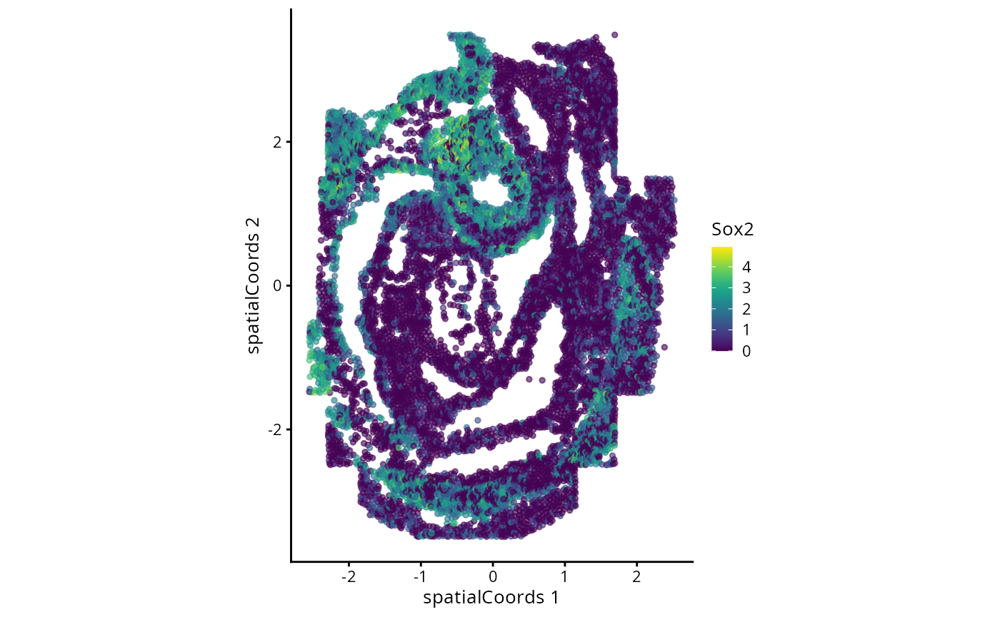
Questions
- How many cells are in this data?
- How many genes?
- Plot gene expression mapping point size to the cell area.
# try to answer the above question using the spe object.
# you may want to check the SingleCellExperiment vignette.
# https://bioconductor.org/packages/3.17/bioc/vignettes/SingleCellExperiment/inst/doc/intro.htmlWe can perform a typical gene-expression based analysis for this data. Later in part two we will perform some specific analytical techniques, but for now let’s explore the dataset and use methods designed for single cell data.
Typically in single-cell data analysis, we perform dimension reduction to project the high dimensional cell x gene matrix on to 2D space. This allows us to visualise various things of interest, such as distribution of cell types and disease outcomes. Here, we will see how cells are segregated by their expression of Sox2.
spe <- runPCA(spe)
b.out <- batchelor::batchCorrect(spe, batch = spe$pos, assay.type = "logcounts", PARAM=FastMnnParam(d=20))
reducedDim(spe, "FastMnn") <- reducedDim(b.out, "corrected")
spe <- runUMAP(spe, dimred = "FastMnn")
spe#> class: SpatialExperiment
#> dim: 351 11026
#> metadata(0):
#> assays(3): counts molecules logcounts
#> rownames(351): Abcc4 Acp5 ... Zfp57 Zic3
#> rowData names(1): gene_name
#> colnames(11026): embryo1_Pos0_cell10_z2 embryo1_Pos0_cell100_z2 ...
#> embryo1_Pos28_cell97_z2 embryo1_Pos28_cell98_z2
#> colData names(15): cell_id embryo ... sample_id sizeFactor
#> spatialCoords names(2) : x y
#> imgData names(1): sample_id
g_celltype_umap <- plotReducedDim(spe, "UMAP", colour_by = "celltype_mapped_refined") +
scale_colour_manual(values = celltype_colours)
g_celltype_umap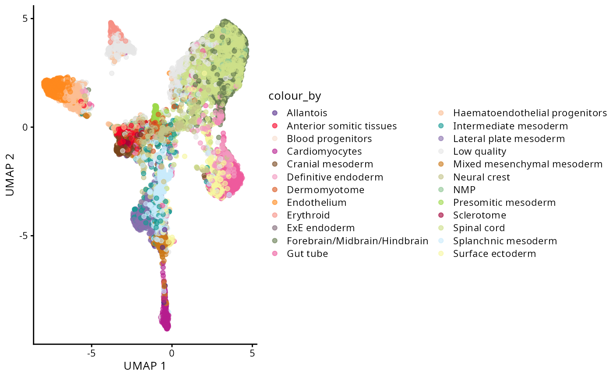
plotReducedDim(spe, "UMAP", colour_by = "Sox2")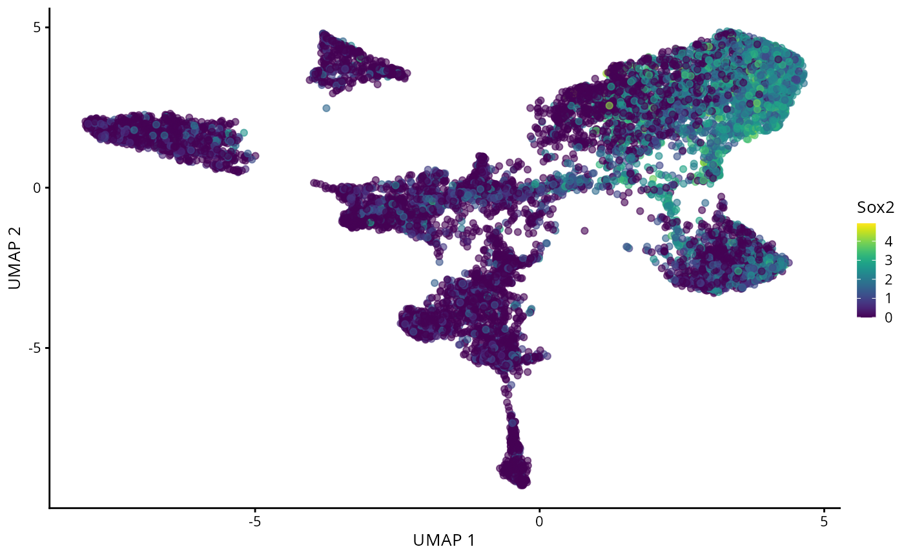
g_celltype_spatial <- plotReducedDim(spe, "spatialCoords", colour_by = "celltype_mapped_refined") +
scale_colour_manual(values = celltype_colours) +
coord_fixed()
g_all <- g_celltype_spatial + theme(legend.position = "none") + g_celltype_umap
g_all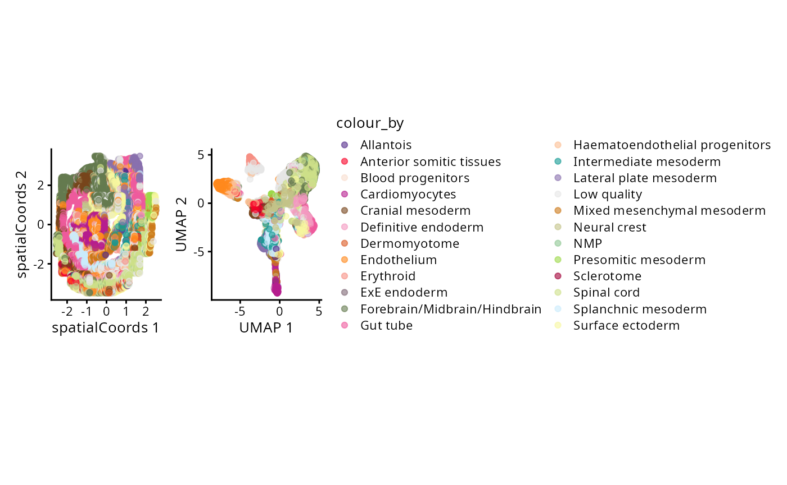
Advanced/Extension Question
- What considerations need to be made for batch correction of spatial data? What assumptions are being made and/or broken? How could you check this?
- Check out the
ggiraphpackage for extending theg_allobject to an interactive plot with a tooltip that links the spatial and UMAP coordinate systems. (Hint: This may involve generating a new ggplot object outside of theplotReducedDimfunction.)
# try to examine answer the above questions using the spe object.
# you may want to set up some small simulation..As part of scdney package infrastructure, we provide several
pre-processed datasets which can be loaded in with the
SpatialDatasets package. Below, we’ve loaded in the
MIBI-TOF triple negative breast cancer data from Keren et al. into a
SpatialExperiment object.
# Load in Keren et al. data.
#kerenSPE = SpatialDatasets::spe_Keren_2018()
# Remove cold tumour types and patients with missing survival data.
kerenSPE = kerenSPE |>
filter(tumour_type != "cold",
!is.na(`Survival_days_capped.`)) |>
mutate(event = 1 - Censored)
colData(kerenSPE)$x <- spatialCoords(kerenSPE)[,1]
colData(kerenSPE)$y <- spatialCoords(kerenSPE)[,2]
reducedDim(kerenSPE, "spatialCoords") <- spatialCoords(kerenSPE)
kerenSPE#> class: SpatialExperiment
#> dim: 48 170171
#> metadata(0):
#> assays(1): intensities
#> rownames(48): Na Si ... Ta Au
#> rowData names(0):
#> colnames(170171): 1 2 ... 197677 197678
#> colData names(43): CellID imageID ... x y
#> spatialCoords names(2) : x y
#> imgData names(1): sample_idAt the start of any analysis, it is often good to explore the data to get a sense of complexity. We can do this by exploring the distribution of the outcomes and variables in the patients’ meta-data.
Try starting off your exploration by answering the below questions.
Questions
- How many cells are in this data?
- How many markers? How many images?
# try to answer the above question using the imc object.
# you may want to check the SpatialExperiment vignette.
# https://www.bioconductor.org/packages/release/bioc/vignettes/SpatialExperiment/inst/doc/SpatialExperiment.htmlAgain, we can perform dimension reduction to visualize this dataset on a 2D plane.
Questions
- Visualise the UMAP using the
plotReducedDimfunction and colour the UMAP bycellType. What does this UMAP tell us? - What are some observations we could make if we coloured by
imageID?
Module 2: Cell segmentation
To load in our images we use the loadImages function
from cytomapper, here we use the patient 5 image from Keren
et al. as an example.
imageLocation <- system.file("extdata", "kerenPatient5.tiff", package = "ScdneySpatial")
image5 = cytomapper::loadImages(
x = imageLocation,
as.is = TRUE #Needed as 8-bit image
)
mcols(image5) = data.frame(list("imageID" = "kerenPatient5"))
# Setting the channel names according to orginal paper.
channelNames(image5) = c("Au", "Background", "Beta catenin", "Ca", "CD11b", "CD11c", "CD138", "CD16", "CD20", "CD209", "CD3", "CD31", "CD4", "CD45", "CD45RO", "CD56", "CD63", "CD68", "CD8", "dsDNA", "EGFR", "Fe", "FoxP3", "H3K27me3", "H3K9ac", "HLA_Class_1", "HLA_DR", "IDO", "Keratin17", "Keratin6", "Ki67", "Lag3", "MPO", "Na", "P", "p53", "Pan-Keratin", "PD-L1", "PD1", "phospho-S6", "Si", "SMA", "Ta", "Vimentin")Questions
- What class is image5? Hint: class()
- How many images and markers are in image5?
- Challenge: What is the dimension of the image5 image?
# Answer questions hereWe can visualise this image to see what we have read in. Lets highlight 4 markers.
# Visualise segmentation performance another way.
cytomapper::plotPixels(
image = image5[1],
colour_by = c("CD45", "Pan-Keratin", "SMA", "dsDNA"),
colour = list(
CD45 = c("black", "blue"),
`Pan-Keratin` = c("black", "yellow"),
SMA = c("black", "green"),
dsDNA = c("black", "red")
)
)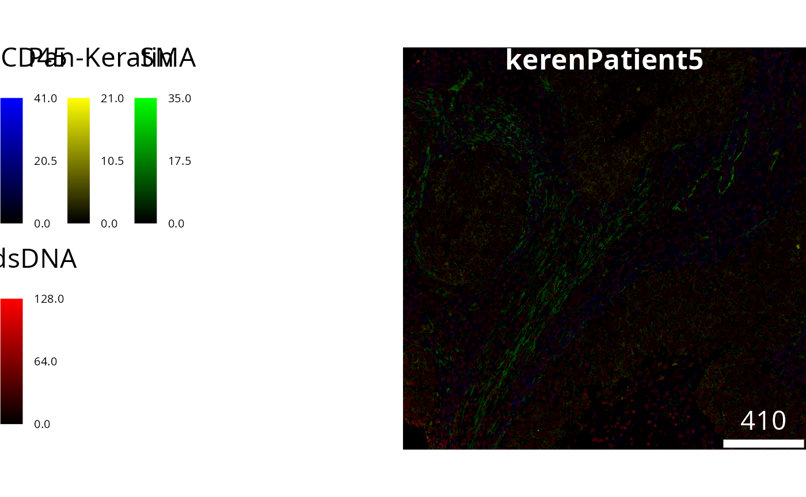
We can manipulate the brightness, contrast and gamma levels as follows. See if you can do a better job.
# Visualise segmentation performance another way.
cytomapper::plotPixels(
image = image5[1],
colour_by = c("CD45", "Pan-Keratin", "SMA", "dsDNA"),
display = "single",
colour = list(
CD45 = c("black", "red"),
`Pan-Keratin` = c("black", "yellow"),
SMA = c("black", "green"),
dsDNA = c("black", "blue")
)
,
# Adjust the brightness, contrast and gamma of each channel.
bcg = list(
CD45 = c(0, 4, 1),
`Pan-Keratin` = c(0, 3, 1),
SMA = c(0, 2, 1),
dsDNA = c(0, 2, 1)
),
legend = NULL
)
The EBImage package on Bioconductor provides a lot of
useful functions for manipulating imaging data in R. This includes
functionality for finding cells, process called cell segmentation. Lets
work through an example from their vignette. This will use some
functionality that complements that which you’ve already learnt.
We start by loading the images of nuclei and cell bodies. To visualize the cells we overlay these images as the green and the blue channel of a false-color image. Notice, that with display you can zoom!
nuc = readImage(system.file('images', 'nuclei.tif', package='EBImage'))
cel = readImage(system.file('images', 'cells.tif', package='EBImage'))
cells = rgbImage(green=1.5*cel, blue=nuc)
display(cells, all = TRUE)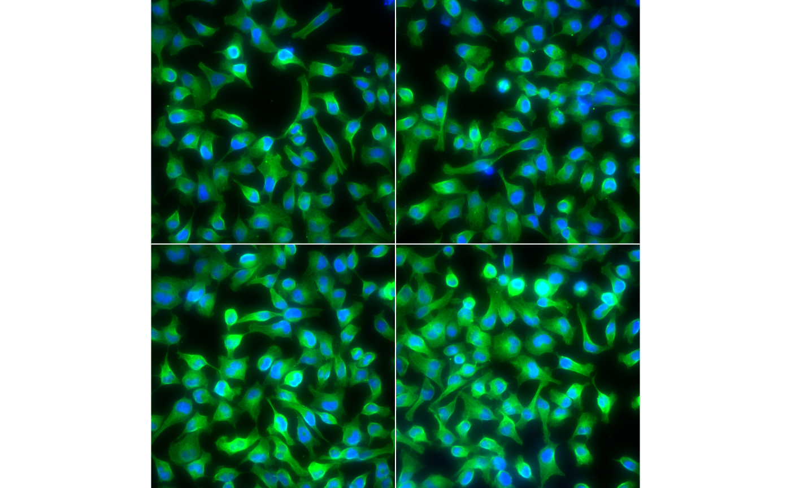
We will next segment the nuclei. The nuc channel
contains fluorescent intensities of a protein expressed in the nuclei of
cells. First we create a nuclei mask which will threshold this channel
to separate signal from noise and then clean this with some
morphological operations. Then we identify single nuclei using
bwlabel.
nmask = thresh(nuc, w=10, h=10, offset=0.05)
nmask = opening(nmask, makeBrush(5, shape='disc'))
nmask = fillHull(nmask)
nmask = bwlabel(nmask)
display(nmask, all=TRUE)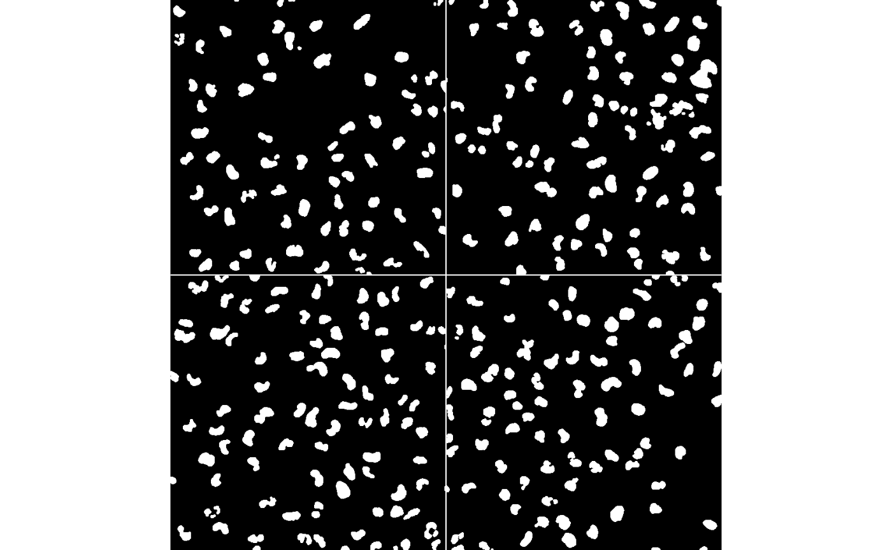
Questions
- Do you understand what
nmaskis? - What are you seeing when you do
table(nmask) - What happens when you using
colorLabels()withdisplay?
Next, we use the segmented nuclei as seeds to perform Voronoi segmentation of the cytoplasm.
ctmask = opening(cel>0.1, makeBrush(5, shape='disc'))
cmask = propagate(cel, seeds=nmask, mask=ctmask)
display(ctmask, all=TRUE)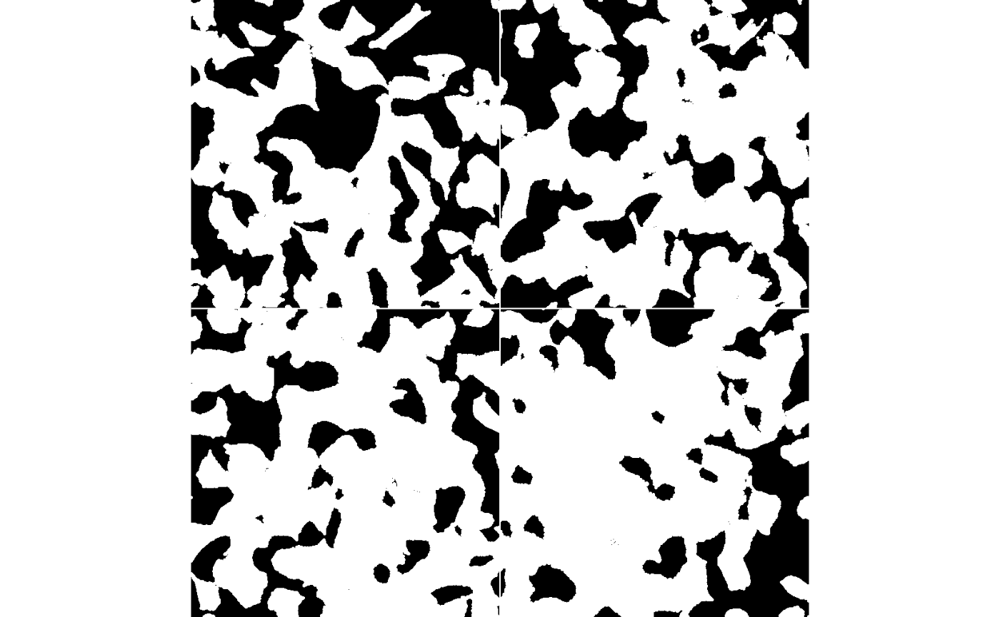
We can then visualise our segmentations with
paintObjects.
segmented = paintObjects(cmask, cells, col='#ff00ff')
segmented = paintObjects(nmask, segmented, col='#ffff00')
display(segmented, all=TRUE)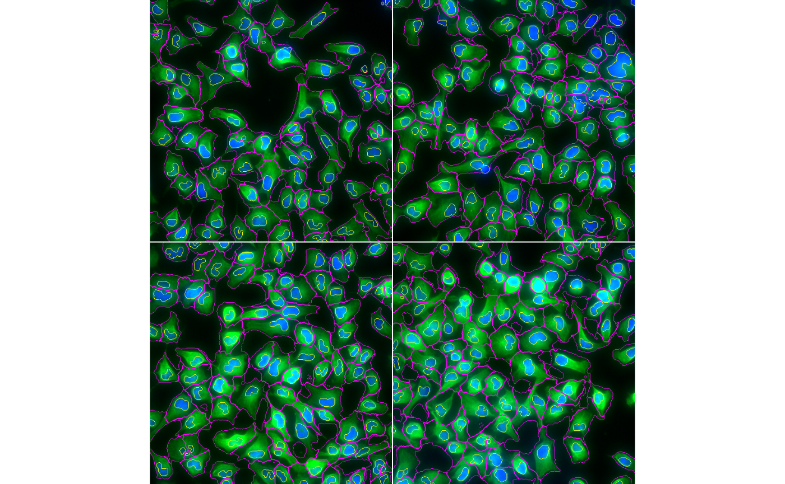
Images stored in a list or CytoImageList
can be segmented using simpleSeg. Below
simpleSeg will identify the nuclei in the image using the
dsDNA, H3K27me3 and H3K9ac
channel. To estimate the cell body of the cells we will simply dilate
out from the nuclei by 3 pixels. We also have specified that the
channels be sqrt transformed, and the 99th quantile of values removed to
ensure our segmentation is not affected by outliers.
We can visualise the segmentations using the display and
colorLabels functions in EBImage.
One way to assess if segmentation is appropriate is to look. We now know two ways to do this.
# Visualise segmentation performance one way.
masks[[1]] |>
EBImage::colorLabels() |>
EBImage::display()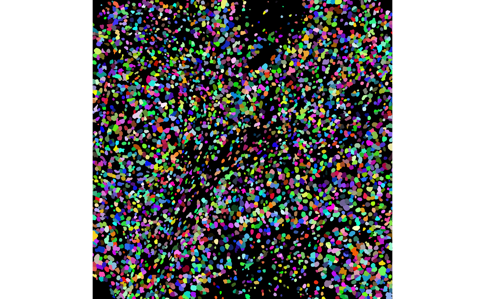
The plotPixels function in cytomapper makes
it easy to overlay the masks on top of the intensities of markers in the
image. Here we can s
# Visualise segmentation performance another way.
cytomapper::plotPixels(
image = image5[1],
mask = masks[1],
img_id = "imageID",
colour_by = c("CD45", "Pan-Keratin", "SMA", "dsDNA"),
display = "single",
colour = list(
CD45 = c("black", "red"),
`Pan-Keratin` = c("black", "yellow"),
SMA = c("black", "green"),
dsDNA = c("black", "blue")
),
# Adjust the brightness, contrast and gamma of each channel.
bcg = list(
CD45 = c(0, 4, 1),
`Pan-Keratin` = c(0, 3, 1),
SMA = c(0, 2, 1),
dsDNA = c(0, 4, 1)
),
legend = NULL
)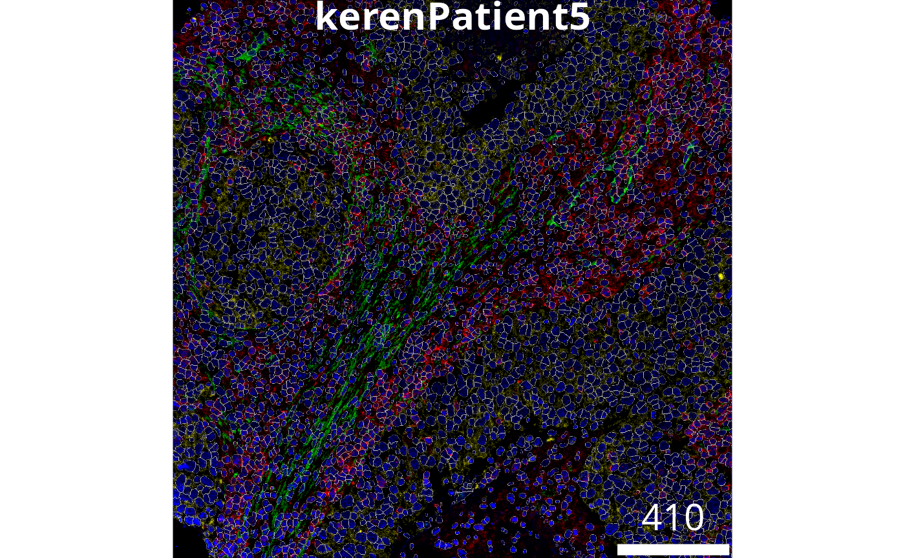
Using the table function in R we can measure the pixel
area of each cell and plot this on a histogram. In this dataset 1 µm is
equivalent to \(2.56\) pixels, we can
transform the pixel area of a cell to physical area by dividing the
pixel area by \(2.56^2\). We can see
below the majority of our cells are just below \(100µm^2\), you should decide whether or not
this is an appropriate size based on your knowledge of the cell types
being imaged.
# Get area of every cell
cellSize = table(masks[[1]])/(2.56^2)
# Filter out first index, which represents background
cellSize[2:length(cellSize)] |>
hist(breaks = 30,
xlab = "Pixel area of cell (µm^2)",
main = NULL) 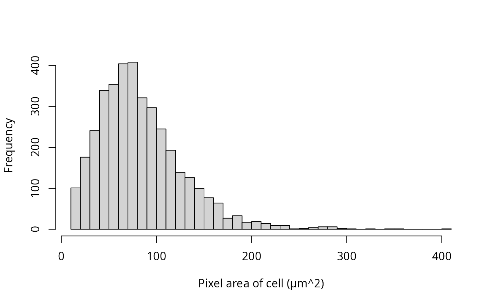
Questions
Do our segmentations look better if other parameters are used? Hint: use the help function to see what other parameters are available in
simpleSeg.We only have one image here, but how would you check the quality of 100 images?
With our segmentation masks we can convert our image to
a SpatialExperiment object using the
measureObjects function in cytomapper.
measureObjects will find the center of each cell and
represent the cell as an x and y coordinate. In addition the average
marker expression within each cell is summarised and stored in the
assays object of the SpatialExperiment. NOTE: If
you are using other segmentation tools or softwares, you can import the
masks as tiffs into R and use measureObjects to create a
SpatialExperiment.
# Summarise the expression of each marker in each cell
cells <- cytomapper::measureObjects(
mask = masks,
image = image5,
feature_types = c("basic", "moment"),
basic_feature = "mean",
moment_feature = c("cx", "cy"),
img_id = "imageID",
BPPARAM = BPPARAM
)
cells#> class: SingleCellExperiment
#> dim: 44 3739
#> metadata(0):
#> assays(1): counts
#> rownames(44): Au Background ... Ta Vimentin
#> rowData names(0):
#> colnames: NULL
#> colData names(5): imageID object_id m.cx m.cy objectNumModule 3: Feature normalisation
Before moving onto annotating the cell types, we should check if the marker intensities of each cell require any transformation or normalisation. Here we examine the distribution of CD45 in each cell across all the images, which is a general marker for immune cells. Below we can see that the intensity of CD45 looks very skewed.
# Joining the marker information with the cell information
proteinIntensities = kerenSPE |>
join_features(features = rownames(kerenSPE), shape = "wide", assay = "intensities")
# View the density of CD45 across all images.
ggplot(proteinIntensities, aes(x = CD45, colour = imageID)) +
geom_density() +
theme(legend.position = "none")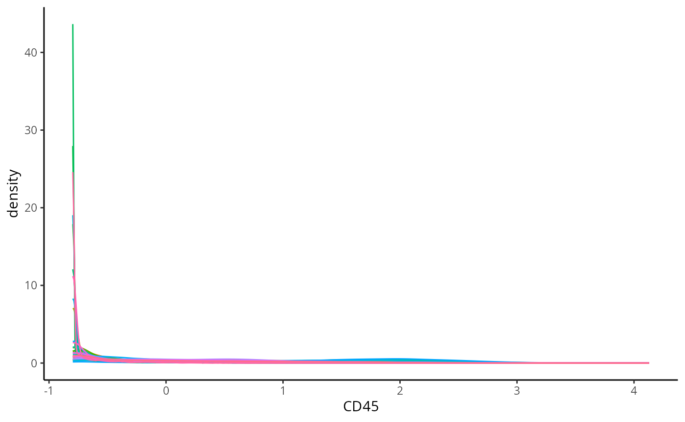
We can transform and normalise our data using the
normalizeCells function in simpleSeg. Here we
have taken the intensities from the intensities assay,
performed a asinh transform, then for each image trimmed the 99 quantile
and min-max scaled to 0-1. In addition to this we have performed
principle component analysis, and regressed out the first PC. This
modified data is then stored in the normIntensities assay.
We can see that the distribution of CD45 looks much less skewed than
before.
kerenSPE <- normalizeCells(
cells = kerenSPE,
transformation = "asinh",
method = c("trim99", "minMax", "PC1"),
assayIn = "intensities",
assayOut = "normIntensities",
cores = nCores
)
normProteinIntensities = kerenSPE |>
join_features(features = rownames(kerenSPE), shape = "wide", assay = "normIntensities")
ggplot(normProteinIntensities, aes(x = CD3, colour = imageID)) +
geom_density() +
theme(legend.position = "none")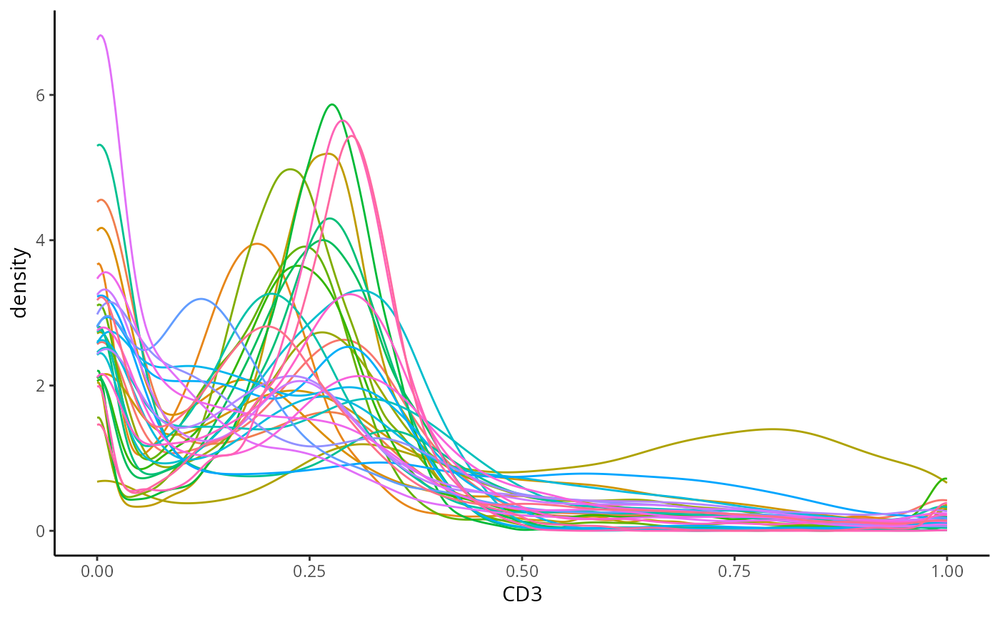
Questions
CD3 is a marker which characterises T cells, plot the distribution of CD3. What does it look like? What does this tell us about T cells in our dataset.
If we set
cellType == "CD4_T_cell"is this concordant with the conclusion you made in question 1.
# Answer question hereModule 4: Cell type annotation
Here we cluster using the runFuseSOM function from
FuseSOM. We have chosen to specify the same subset of
markers used in the original manuscript for gating cell types. We have
also specified the number of clusters to identify to be
numClusters = 17.
useMarkers = c("CD45", "FoxP3", "CD4", "CD8", "CD3", "CD20", "CD16", "CD68", "MPO", "HLA.DR", "Pan.Keratin", "Keratin17", "Keratin6", "p53", "Beta.catenin", "EGFR")
set.seed(51773)
kerenSPE <- runFuseSOM(
kerenSPE,
markers = useMarkers,
assay = "normIntensities",
numClusters = 17
)We can begin the process of understanding what each of these cell
clusters are by using the plotGroupedHeatmap function from
scater.
scater::plotGroupedHeatmap(
kerenSPE,
features = useMarkers,
group = "clusters",
exprs_values = "normIntensities",
center = TRUE,
scale = TRUE,
zlim = c(-3, 3),
cluster_rows = FALSE
)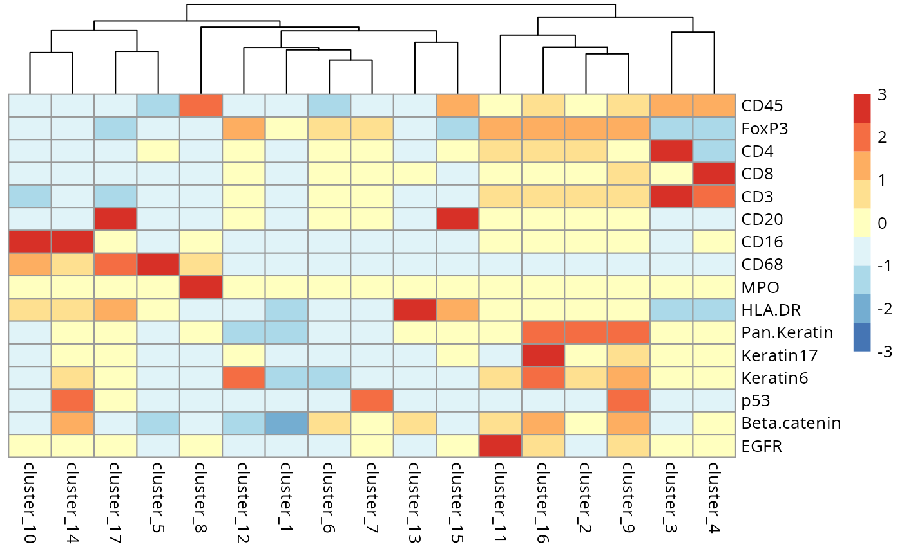
Questions
- Have we captured distinct cell populations? Can you identify any of the clusters?
- Run the code below to compare the cell types in the dataset to the clusters we have identified. How do our clusters compare? Are there any clusters that should be combined?
# Type your answer here
# Question 2 code
regionMap(kerenSPE, cellType = "clusters", region = "cellType") +
theme(axis.text.x = element_text(angle = 90, vjust = 0.5, hjust = 1)) +
labs(x = "Cell types in data", y = "Our clusters")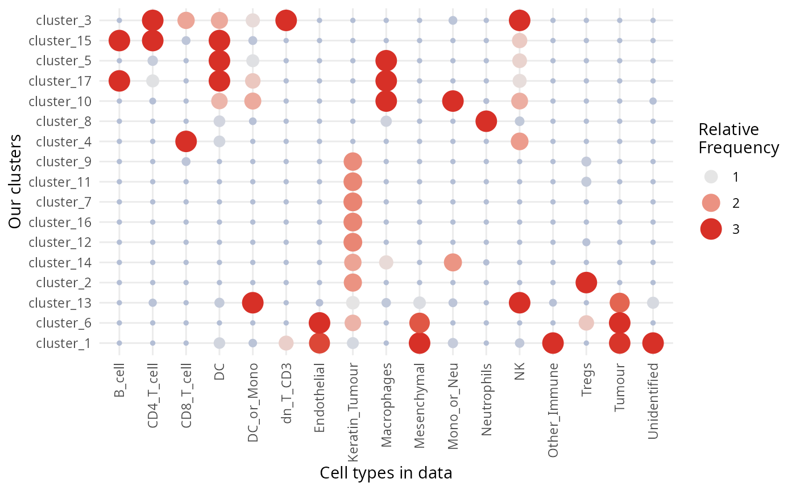
Great question! There is no right answer here, however there are
several statistics which can be used to estimate the “true” number of
clusters. We can use the estimateNumCluster and
optiPlot functions from FuseSOM to examine if
our choice of 17 clusters is reasonable. Here we use the gap statistic,
other methods such as jump, slope, silhouette and within cluster
distance (wcd) are also available.
kerenSPE <- estimateNumCluster(kerenSPE, kSeq = 2:30)
optiPlot(kerenSPE, method = "gap")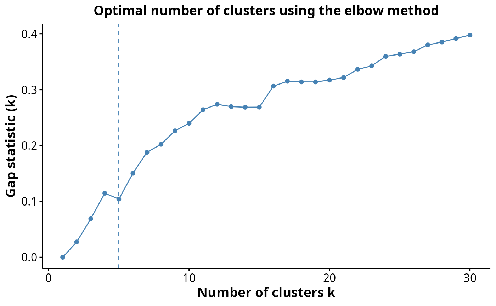
kerenSPE@metadata$clusterEstimation$Discriminant#> [1] 10Finally we can run a UMAP to examine how distinct our clusters are from one another.
set.seed(51773)
# Perform dimension reduction using UMP.
kerenSPE <- scater::runUMAP(
kerenSPE,
subset_row = useMarkers,
exprs_values = "normIntensities",
name = "normUMAP"
)
# UMAP by cell type cluster.
scater::plotReducedDim(
kerenSPE,
dimred = "normUMAP",
colour_by = "clusters"
)
Questions
- How does this UMAP compare to the original UMAP?
# Answer question here.Cell type clustering may difficult without the aid of domain experts who know how many cell types to expect and are able to annotate the clusters. Cell type classification is an alternative approach to clustering which annotates cell types based on an expert labeled reference dataset.
To do so we will use scClassify. Below we will use the
intensities an cell type annotations from the kerenSPE
dataset to predict the cell types in image 5.
# Splitting data to train and test sets
kerenSPE_train = kerenSPE |>
filter(imageID != 5)
kerenSPE_test = kerenSPE |>
filter(imageID == 5 )
# Converting intensities to dgCMatrix
train_intensities = assay(kerenSPE_train, "intensities") |>
as.matrix() |>
as( "dgCMatrix")
test_intensities = assay(kerenSPE_test, "intensities") |>
as.matrix() |>
as( "dgCMatrix")scClassify first constructs a cell type tree from the
training dataset, where cells are organised in a hierarchy with
increasingly fined tuned annotations, here we use the
HOPACH method to construct this tree. This tree is
constructed using the proteins which are differentially expressed
between one cell type to all the other cells, identified using
limma. To annotate the cells in the unlabeled dataset, the
unlabeled cells are projected into a lower dimensional space and a
weighted KNN (WKNN) is used to classify unlabeled cells to
their closest neighbours using pearson correlation as the
distance metric.
scClassifyResults = scClassify(exprsMat_train = train_intensities,
cellTypes_train = kerenSPE_train$cellType,
exprsMat_test = list(keren5 = test_intensities),
tree = "HOPACH",
algorithm = "WKNN",
selectFeatures = c("limma"),
similarity = c("pearson"),
returnList = FALSE,
verbose = FALSE,
BPPARAM = BPPARAM)To save time we have preloaded in the scClassify
results, below we can view the hierarchical tree constructed by
scClassify.
load(system.file("extdata", "scClassifyResults.rda", package = "ScdneySpatial"))
plotCellTypeTree(cellTypeTree(scClassifyResults$trainRes))Having a look at some of the predictions, we can observe some cells belonging to multiple cell types. These represent cells which are classified as parent populations in the hierarchical tree. Here we clean up the names to make plotting easier. We can compare our original labels to our classified labels to get a sense of how concordant our predictions are. As you can see, around 68% of the cell types have identical labels between the original and classified cell types.
classifiedCellTypes = scClassifyResults$testRes$keren5$pearson_WKNN_limma$predRes
table(classifiedCellTypes)#> classifiedCellTypes
#> B_cell
#> 2
#> CD4_T_cell
#> 209
#> CD8_T_cell
#> 440
#> DC
#> 1
#> DC_or_Mono
#> 217
#> DC_or_Mono_Macrophages_Mono_or_Neu
#> 122
#> dn_T_CD3
#> 36
#> dn_T_CD3_B_cell_CD4_T_cell_CD8_T_cell
#> 1
#> dn_T_CD3_B_cell_CD4_T_cell_DC_or_Mono_Macrophages_CD8_T_cell_Mono_or_Neu_Neutrophils_NK_DC_Tregs
#> 194
#> dn_T_CD3_CD4_T_cell_CD8_T_cell
#> 70
#> Endothelial
#> 102
#> Endothelial_Mesenchymal
#> 11
#> Keratin_Tumour
#> 1901
#> Keratin_Tumour_Unidentified_Other_Immune_Endothelial_Mesenchymal_Tumour
#> 417
#> Macrophages
#> 857
#> Macrophages_Mono_or_Neu
#> 130
#> Mesenchymal
#> 76
#> Mono_or_Neu
#> 35
#> Neutrophils
#> 65
#> Other_Immune
#> 75
#> Other_Immune_Endothelial_Mesenchymal
#> 55
#> Tregs
#> 31
#> Tumour
#> 16
#> unassigned
#> 335
#> Unidentified
#> 4
#> Unidentified_Tumour
#> 4
newCellTypes = case_when(
classifiedCellTypes == "Keratin_Tumour_Unidentified_Other_Immune_Endothelial_Mesenchymal_Tumour" ~ "Tumour_parent",
classifiedCellTypes == "Other_Immune_Endothelial_Mesenchymal" ~ "Structural_parent",
classifiedCellTypes == "Macrophages_Mono_or_Neu" ~ "Monocyte_subparent",
classifiedCellTypes == "DC_or_Mono_Macrophages_Mono_or_Neu" ~ "Monocyte_parent",
classifiedCellTypes == "dn_T_CD3_B_cell_CD4_T_cell_DC_or_Mono_Macrophages_CD8_T_cell_Mono_or_Neu_Neutrophils_NK_DC_Tregs" ~ "Immune_parent",
classifiedCellTypes == "dn_T_CD3_CD4_T_cell_CD8_T_cell" ~ "Tcell_parent",
classifiedCellTypes == "Endothelial_Mesenchymal" ~ "Structural_parent",
classifiedCellTypes == "dn_T_CD3_B_cell_CD4_T_cell_CD8_T_cell" ~ "Lymphocytes_parent",
TRUE ~ classifiedCellTypes
)
kerenSPE_test$classifiedCellTypes = newCellTypes
(kerenSPE_test$cellType == kerenSPE_test$classifiedCellTypes) |>
mean()#> [1] 0.6877543We can look at the distribution of cells in an image. Here we compare our clusters and classified cell types to the cell types in the dataset.
reducedDim(kerenSPE, "spatialCoords") <- spatialCoords(kerenSPE)
kerenSPE |>
filter(imageID == "5") |>
plotReducedDim("spatialCoords", colour_by = "clusters") +
ggtitle("Our clusters")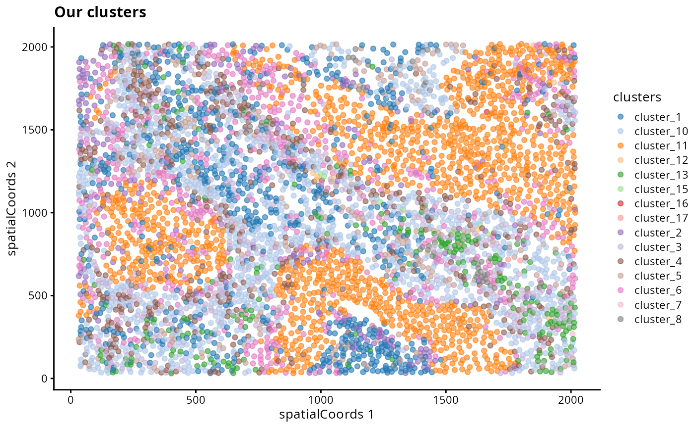
reducedDim(kerenSPE_test, "spatialCoords") = spatialCoords(kerenSPE_test)
# Filter out the "parent" classified cells
kerenSPE_test |>
filter(classifiedCellTypes %in% unique(kerenSPE$cellType)) |>
plotReducedDim("spatialCoords", colour_by = "classifiedCellTypes") +
ggtitle("Classified cell types")
kerenSPE |>
filter(imageID == "5") |>
plotReducedDim("spatialCoords", colour_by = "cellType") +
ggtitle("Original cell types")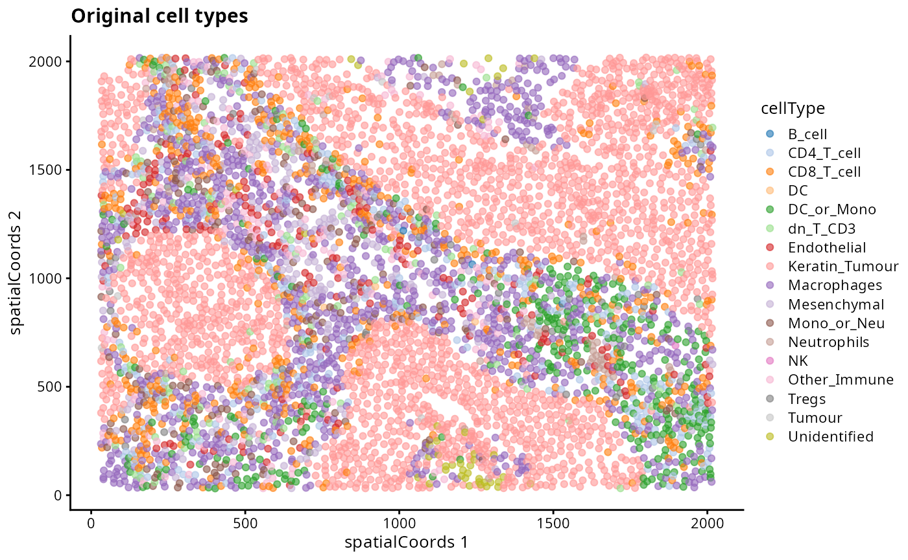
# Comparing orignal cell types to clustering and classification cell types.
regionMap(kerenSPE, cellType = "clusters", region = "cellType") +
theme(axis.text.x = element_text(angle = 90, vjust = 0.5, hjust = 1)) +
ggtitle("Original vs Clustered") +
labs(x = "Original cell labels", y = "Clustering cell labels")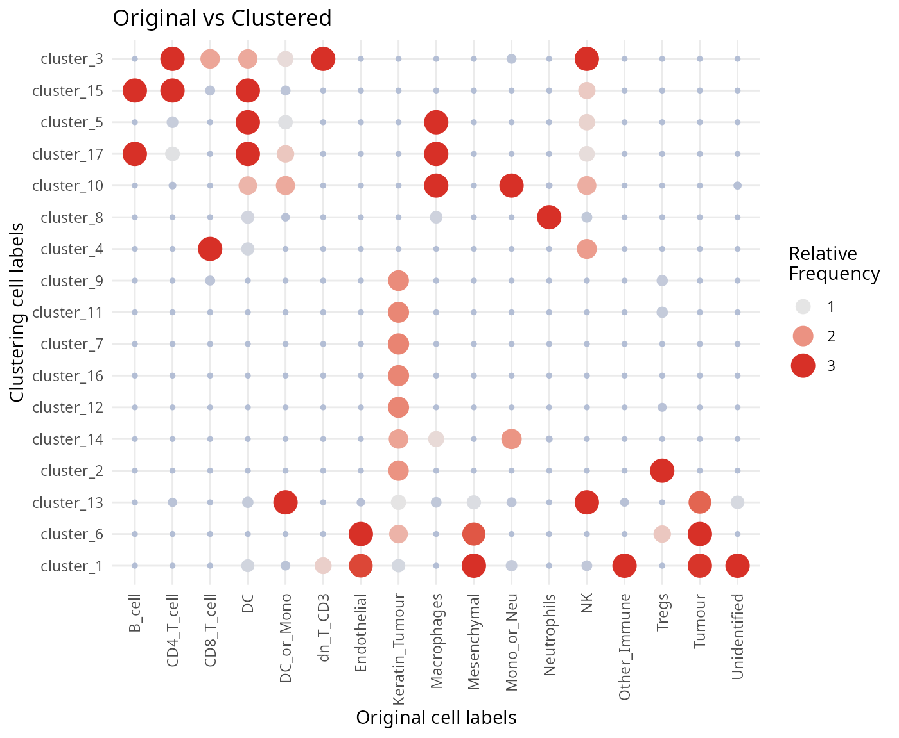
regionMap(kerenSPE_test, cellType = "classifiedCellTypes", region = "cellType") +
theme(axis.text.x = element_text(angle = 90, vjust = 0.5, hjust = 1)) +
ggtitle("Original vs Classified") +
labs(x = "Original cell labels", y = "Classified cell labels")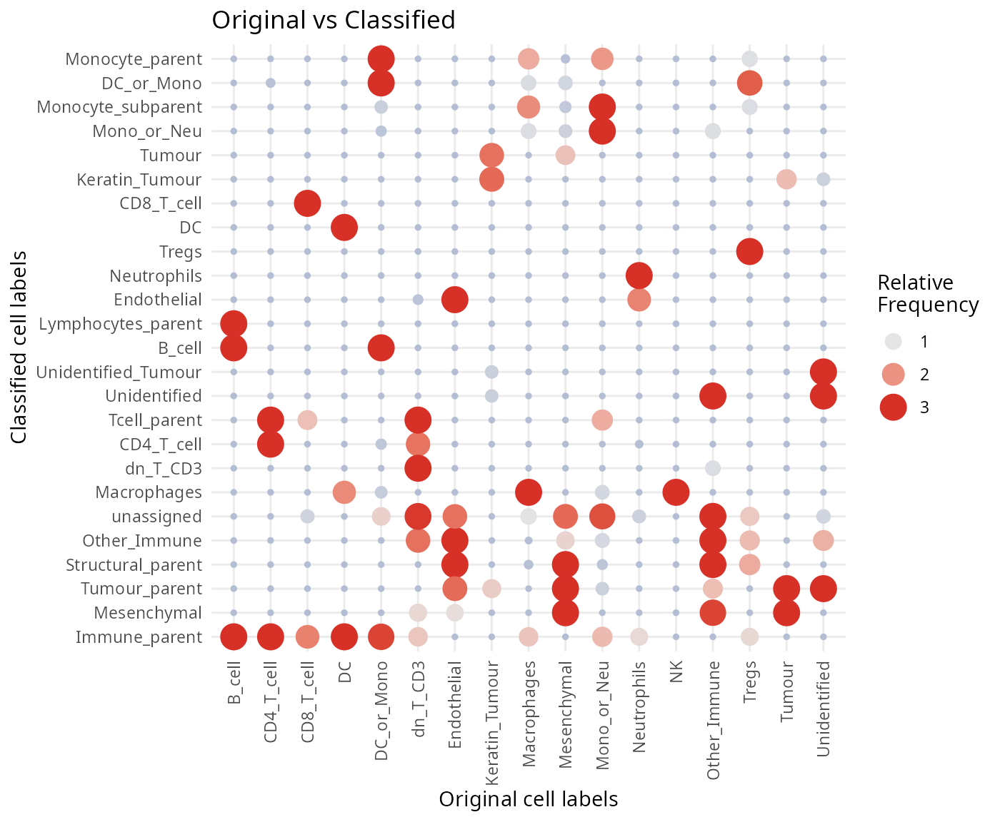
Questions
- Discuss amongst your peers, why might there be differences between the clusters, the classified cell types and the original cell type labels in the dataset?
Module 5: Single sample analysis
In this module we focus on examining gene expression patterns in a single image, from the SeqFISH mouse embryo dataset.
Here we will ask which gene patterns we observe to be changing across
the spe$gutRegion cell type in space. Note that we want to
assess the anatomical region corresponding to the anterior end of the
developing gut developing brain so we will first subset the cells using
the spatial coordinates. We can check what we have selected by
plotting.
# Filter cells which are labeled gut tub, and in the anterior section.
spe$gutRegion <- spe$celltype_mapped_refined == "Gut tube" &
reducedDim(spe, "spatialCoords")[,1] < -0.5
plotReducedDim(spe, "spatialCoords", colour_by = "gutRegion") +
coord_fixed() +
scale_colour_manual(values = c("TRUE" = "red", "FALSE" = "grey"))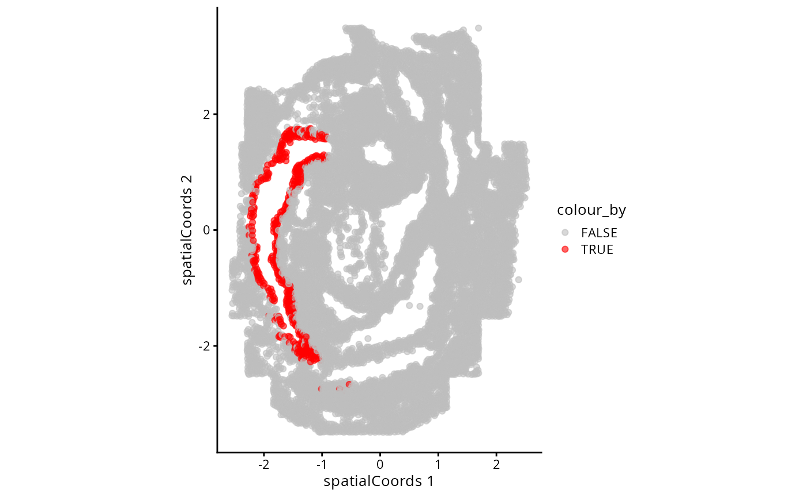
Let’s subset the data to only these cells and continue with our scHOT analysis.
spe_gut <- spe[,spe$gutRegion]
spe_gut#> class: SpatialExperiment
#> dim: 351 472
#> metadata(0):
#> assays(3): counts molecules logcounts
#> rownames(351): Abcc4 Acp5 ... Zfp57 Zic3
#> rowData names(1): gene_name
#> colnames(472): embryo1_Pos3_cell377_z2 embryo1_Pos3_cell388_z2 ...
#> embryo1_Pos27_cell74_z2 embryo1_Pos28_cell373_z2
#> colData names(16): cell_id embryo ... sizeFactor gutRegion
#> spatialCoords names(2) : x y
#> imgData names(1): sample_idWe select genes with at least some proportion of expressed cells for
testing, and create the scHOT object.
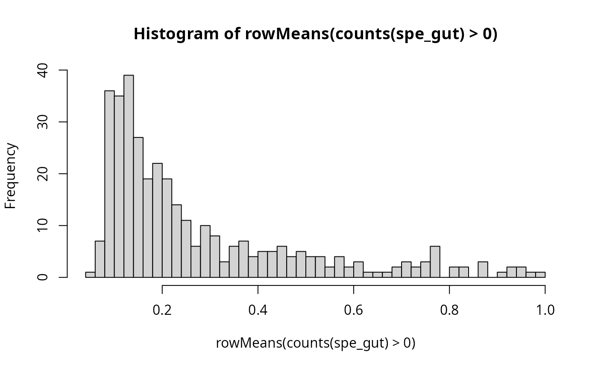
gene_to_test <- as.matrix(c(rownames(spe_gut[rowMeans(counts(spe_gut)>0) > 0.2,])))
length(gene_to_test)#> [1] 165#> [,1]
#> Acvr1 "Acvr1"
#> Acvr2a "Acvr2a"
#> Ahnak "Ahnak"
#> Akr1c19 "Akr1c19"
#> Aldh1a2 "Aldh1a2"
#> Aldh2 "Aldh2"
scHOT_spatial <- scHOT_buildFromSCE(spe_gut,
assayName = "logcounts",
positionType = "spatial",
positionColData = c("x_global_affine", "y_global_affine"))
scHOT_spatial#> class: scHOT
#> dim: 351 472
#> metadata(0):
#> assays(1): expression
#> rownames(351): Abcc4 Acp5 ... Zfp57 Zic3
#> rowData names(0):
#> colnames(472): embryo1_Pos3_cell377_z2 embryo1_Pos3_cell388_z2 ...
#> embryo1_Pos27_cell74_z2 embryo1_Pos28_cell373_z2
#> colData names(16): cell_id embryo ... sizeFactor gutRegion
#> testingScaffold dim: 0 0
#> weightMatrix dim: 0 0
#> scHOT_output colnames (0):
#> param names (0):
#> position type: spatialWe now add the testing scaffold to the scHOT object, and
set the local weight matrix for testing, with a choice of span of 0.1
(the proportion of cells to weight around each cell). We can speed up
computation by not requiring the weight matrix correspond to every
individual cell, but instead a random selection among all the cells
using the thin function.
scHOT_spatial <- scHOT_addTestingScaffold(scHOT_spatial, gene_to_test)
head(scHOT_spatial@testingScaffold)#> gene_1
#> Acvr1 "Acvr1"
#> Acvr2a "Acvr2a"
#> Ahnak "Ahnak"
#> Akr1c19 "Akr1c19"
#> Aldh1a2 "Aldh1a2"
#> Aldh2 "Aldh2"
scHOT_spatial <- scHOT_setWeightMatrix(scHOT_spatial, span = 0.2)
scHOT_spatial@weightMatrix <- thin(scHOT_spatial@weightMatrix, n = 50)
dim(slot(scHOT_spatial, "weightMatrix"))#> [1] 53 472For a given cell we can visually examine the local weight given by the span parameter.
cellID = 10
df <- cbind(as.data.frame(colData(scHOT_spatial)),
W = slot(scHOT_spatial, "weightMatrix")[cellID,])
ggplot(df,
aes(x = x_global_affine, y = -y_global_affine)) +
geom_point(aes(colour = W, size = W)) +
scale_colour_gradient(low = "black", high = "purple") +
scale_size_continuous(range = c(0.5,2.5)) +
theme_classic() +
guides(colour = guide_legend(title = "Spatial Weight"),
size = guide_legend(title = "Spatial Weight")) +
ggtitle(paste0("Central cell: ", cellID)) +
coord_fixed() +
NULL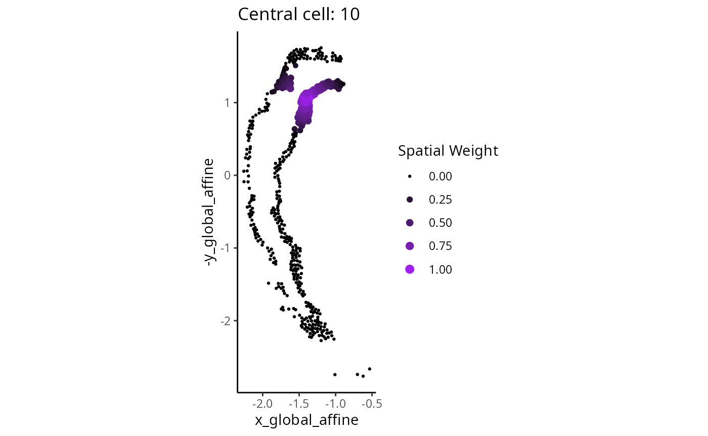
Question
- How will the results change if the span is increased/decreased?
## Make associated changes to the code to test out the question above.We set the higher order function as the weighted mean function, and then calculate the observed higher order test statistics. This may take around 10 seconds.
scHOT_spatial <- scHOT_calculateGlobalHigherOrderFunction(
scHOT_spatial,
higherOrderFunction = weightedMean,
higherOrderFunctionType = "weighted")
slot(scHOT_spatial, "scHOT_output")#> DataFrame with 165 rows and 2 columns
#> gene_1 globalHigherOrderFunction
#> <character> <matrix>
#> Acvr1 Acvr1 0.216666
#> Acvr2a Acvr2a 0.375776
#> Ahnak Ahnak 0.976418
#> Akr1c19 Akr1c19 0.744070
#> Aldh1a2 Aldh1a2 0.245981
#> ... ... ...
#> Wnt5a Wnt5a 0.335820
#> Wnt5b Wnt5b 0.220300
#> Xist Xist 1.162241
#> Zfp444 Zfp444 0.744082
#> Zfp57 Zfp57 0.595519
scHOT_spatial <- scHOT_calculateHigherOrderTestStatistics(
scHOT_spatial, na.rm = TRUE)Now we can plot the overall mean versus the scHOT statistic to
observe any relationship. Labels can be interactively visualised using
ggplotly. Some genes may have different distributions so we
turn to permutation testing to assess statistical significance.
g <- ggplot(as.data.frame(scHOT_spatial@scHOT_output),
aes(x = globalHigherOrderFunction, y = higherOrderStatistic, label = gene_1)) +
xlab("Mean across all cells") +
ylab("scHOT statistic for local weightedMean") +
geom_point()
g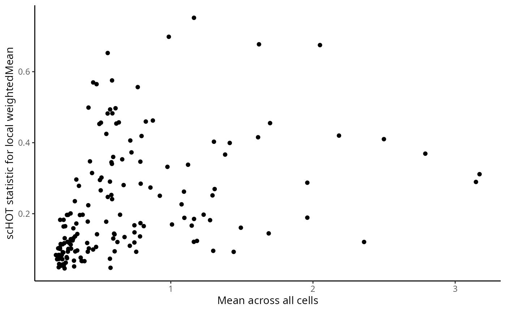
ggplotly(g)Set up the permutation testing schema. For the purposes of this workshop we set a low number of permutations over a low number of genes in the testing scaffold, you may want to change this as you work through the workshop yourself. The testing will take a few minutes to run, here with the parallel parameters that were set at the beginning of this document.
scHOT_spatial <- scHOT_setPermutationScaffold(scHOT_spatial,
numberPermutations = 50,
numberScaffold = 30)
scHOT_spatial <- scHOT_performPermutationTest(
scHOT_spatial,
verbose = TRUE,
parallel = FALSE)#> Permutation testing combination 80 of 165...
slot(scHOT_spatial, "scHOT_output")#> DataFrame with 165 rows and 9 columns
#> gene_1 globalHigherOrderFunction higherOrderSequence
#> <character> <matrix> <NumericList>
#> Acvr1 Acvr1 0.216666 0.251205,0.275076,0.286668,...
#> Acvr2a Acvr2a 0.375776 0.398236,0.376223,0.361763,...
#> Ahnak Ahnak 0.976418 1.23931,1.22101,1.19278,...
#> Akr1c19 Akr1c19 0.744070 0.681732,0.622183,0.625407,...
#> Aldh1a2 Aldh1a2 0.245981 0.117491,0.118105,0.121221,...
#> ... ... ... ...
#> Wnt5a Wnt5a 0.335820 0.282418,0.280240,0.268180,...
#> Wnt5b Wnt5b 0.220300 0.262440,0.321449,0.368172,...
#> Xist Xist 1.162241 1.18893,1.17123,1.18238,...
#> Zfp444 Zfp444 0.744082 0.529888,0.531771,0.538540,...
#> Zfp57 Zfp57 0.595519 0.853046,0.844188,0.838651,...
#> higherOrderStatistic numberPermutations storePermutations
#> <numeric> <numeric> <logical>
#> Acvr1 0.0750954 0 TRUE
#> Acvr2a 0.0665143 0 TRUE
#> Ahnak 0.3319897 0 TRUE
#> Akr1c19 0.1673342 0 TRUE
#> Aldh1a2 0.1827836 50 TRUE
#> ... ... ... ...
#> Wnt5a 0.172300 0 TRUE
#> Wnt5b 0.104924 0 TRUE
#> Xist 0.120828 50 TRUE
#> Zfp444 0.118930 0 TRUE
#> Zfp57 0.130128 0 TRUE
#> permutations pvalPermutations FDRPermutations
#> <NumericList> <numeric> <numeric>
#> Acvr1 NA NA NA
#> Acvr2a NA NA NA
#> Ahnak NA NA NA
#> Akr1c19 NA NA NA
#> Aldh1a2 0.0482154,0.0593701,0.0513777,... 0.0196078 0.0231579
#> ... ... ... ...
#> Wnt5a NA NA NA
#> Wnt5b NA NA NA
#> Xist 0.147309,0.134604,0.226559,... 0.46 0.46
#> Zfp444 NA NA NA
#> Zfp57 NA NA NAAfter the permutation test we can estimate the P-values across all genes.
scHOT_plotPermutationDistributions(scHOT_spatial)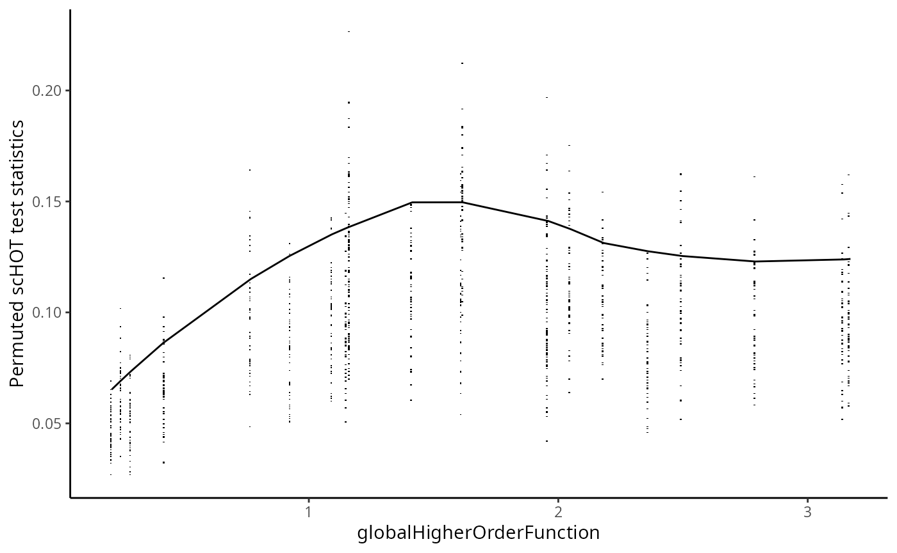
scHOT_spatial <- scHOT_estimatePvalues(scHOT_spatial,
nperm_estimate = 100,
maxDist = 0.1)
slot(scHOT_spatial, "scHOT_output")#> DataFrame with 165 rows and 14 columns
#> gene_1 globalHigherOrderFunction higherOrderSequence
#> <character> <matrix> <NumericList>
#> Acvr1 Acvr1 0.216666 0.251205,0.275076,0.286668,...
#> Acvr2a Acvr2a 0.375776 0.398236,0.376223,0.361763,...
#> Ahnak Ahnak 0.976418 1.23931,1.22101,1.19278,...
#> Akr1c19 Akr1c19 0.744070 0.681732,0.622183,0.625407,...
#> Aldh1a2 Aldh1a2 0.245981 0.117491,0.118105,0.121221,...
#> ... ... ... ...
#> Wnt5a Wnt5a 0.335820 0.282418,0.280240,0.268180,...
#> Wnt5b Wnt5b 0.220300 0.262440,0.321449,0.368172,...
#> Xist Xist 1.162241 1.18893,1.17123,1.18238,...
#> Zfp444 Zfp444 0.744082 0.529888,0.531771,0.538540,...
#> Zfp57 Zfp57 0.595519 0.853046,0.844188,0.838651,...
#> higherOrderStatistic numberPermutations storePermutations
#> <numeric> <numeric> <logical>
#> Acvr1 0.0750954 0 TRUE
#> Acvr2a 0.0665143 0 TRUE
#> Ahnak 0.3319897 0 TRUE
#> Akr1c19 0.1673342 0 TRUE
#> Aldh1a2 0.1827836 50 TRUE
#> ... ... ... ...
#> Wnt5a 0.172300 0 TRUE
#> Wnt5b 0.104924 0 TRUE
#> Xist 0.120828 50 TRUE
#> Zfp444 0.118930 0 TRUE
#> Zfp57 0.130128 0 TRUE
#> permutations pvalPermutations FDRPermutations
#> <NumericList> <numeric> <numeric>
#> Acvr1 NA NA NA
#> Acvr2a NA NA NA
#> Ahnak NA NA NA
#> Akr1c19 NA NA NA
#> Aldh1a2 0.0482154,0.0593701,0.0513777,... 0.0196078 0.0231579
#> ... ... ... ...
#> Wnt5a NA NA NA
#> Wnt5b NA NA NA
#> Xist 0.147309,0.134604,0.226559,... 0.46 0.46
#> Zfp444 NA NA NA
#> Zfp57 NA NA NA
#> numberPermutationsEstimated globalLowerRangeEstimated
#> <integer> <numeric>
#> Acvr1 150 0.209573
#> Acvr2a 100 0.286168
#> Ahnak 50 0.922912
#> Akr1c19 50 0.767661
#> Aldh1a2 150 0.209573
#> ... ... ...
#> Wnt5a 150 0.245981
#> Wnt5b 150 0.209573
#> Xist 200 1.092607
#> Zfp444 50 0.767661
#> Zfp57 1100 0.209573
#> globalUpperRangeEstimated pvalEstimated FDREstimated
#> <numeric> <numeric> <numeric>
#> Acvr1 0.286168 0.05333333 0.0698413
#> Acvr2a 0.416245 0.29000000 0.3277397
#> Ahnak 0.922912 0.01960784 0.0272727
#> Akr1c19 0.767661 0.01960784 0.0272727
#> Aldh1a2 0.286168 0.00662252 0.0196429
#> ... ... ... ...
#> Wnt5a 0.416245 0.00662252 0.0196429
#> Wnt5b 0.286168 0.00662252 0.0196429
#> Xist 1.163058 0.31000000 0.3456081
#> Zfp444 0.767661 0.16000000 0.1885714
#> Zfp57 3.171420 0.15090909 0.1791367We can now examine the spatial expression of the 5 most significant genes, both in our scHOT object and over our original spe object.
output_sorted <- slot(scHOT_spatial, "scHOT_output")[order(slot(scHOT_spatial,
"scHOT_output")$pvalEstimated),]
topgenes <- rownames(output_sorted)[1:5]
reducedDim(scHOT_spatial, "spatialCoords") <- reducedDim(spe, "spatialCoords")[colnames(scHOT_spatial),]
for (topgene in topgenes) {
g_spe <- plotReducedDim(spe, "spatialCoords", colour_by = c(topgene), point_size = 1) +
coord_fixed()
g_scHOT <- plotReducedDim(scHOT_spatial, "spatialCoords", colour_by = c(topgene), point_size = 1,
by_exprs_values = "expression") +
coord_fixed()
g_all <- g_scHOT + g_spe
print(g_all)
}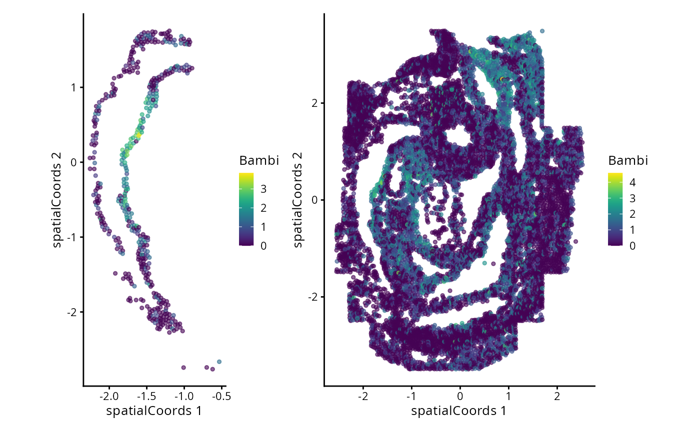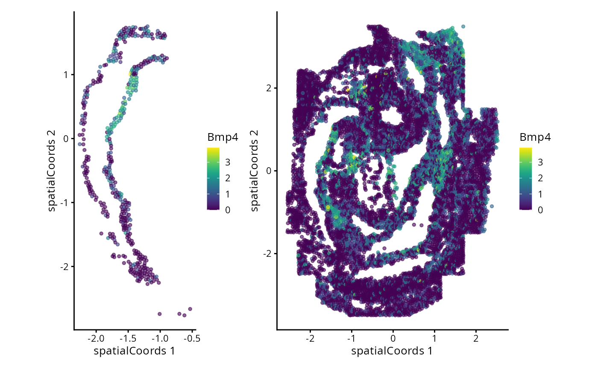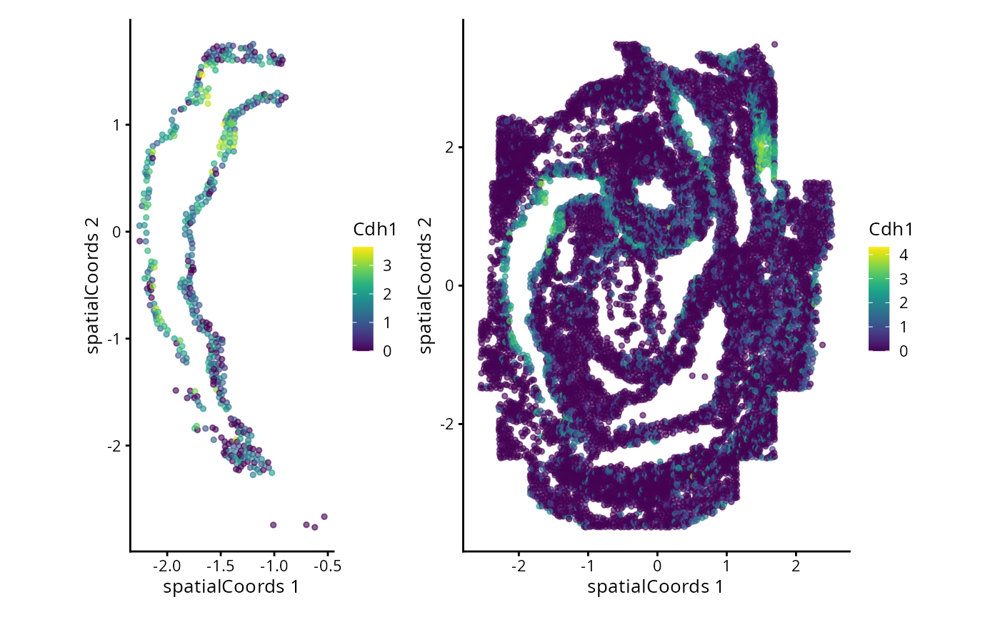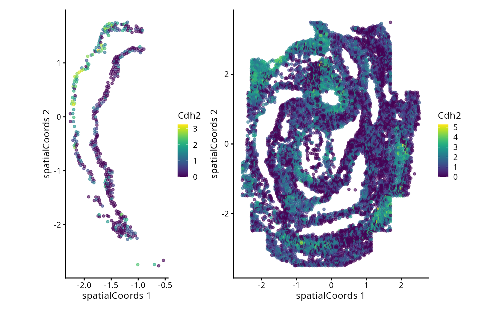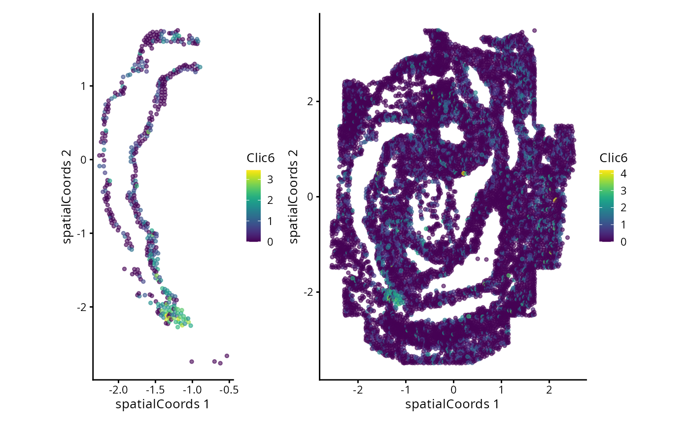
Here we are noting the genes that are found to have the most statistically significant spatial variation in their local mean expression. These genes point to specific patterns that govern the development of individual parts of the gut tube.
Advanced/Extended Questions
- How would you perform such testing over multiple distinct samples?
- scHOT is developed with all higher order testing in mind, use the associated vignette to get towards assessing changes in variation or correlation structure in space.
## try some codeModule 6: Multi-sample analysis
The following module will examine how we can extract different spatial and molecular features from multi-sample datasets. These features can be used to extract some biological understanding. Here we use the MIBI-TOF breast cancer dataset.
Can I measure if two cell types are co-localised?
Kontextual is a part of the Statial package
which models spatial relationships between cells in the context of
hierarchical cell lineage structures. By assessing spatial relationships
between pairs of cells in the context of other related cell types,
Kontextual provides robust quantification of cell type relationships
which are invariant to changes in tissue structure.
For the purposes of using Kontextual we define cell
functions as identified clusters of cells, where larger clusters
represent a “parent” cell population, and finer sub-clusters
representing a “child” cell population with a particular function. For
example, CD4+ T cells have a highly specified function, and may be
considered a child to a larger parent population of T cells.
Kontextual thus aims to quantify how the localisation
patterns of a child population of cells deviate from the spatial
behaviour of their parent population, and how their cellular function
defines their spatial localisation.
A key input for Kontextual is an annotation of cell type
hierarchies. We will need these to organise all the cells present into
cell state populations or clusters, e.g. all the different B cell types
are put in a vector called bcells.
To make our lives easier, we will start by defining these here. I’m happy to talk about how we use our bioconductor package treekoR to define these hierarchies in a data driven way.
# Set up cell populations
tumour <- c("Keratin_Tumour", "Tumour")
bcells <- c("B_cell")
tcells <- c("dn_T_cell", "CD4_T_cell", "CD8_T_cell", "Tregs")
myeloid <- c("Dc_or_Mono", "DC", "Mono_or_Neu", "Macrophages", "Other_Immune", "Neutrophils")
endothelial <- c("Endothelial")
mesenchymal <- c("Mesenchymal")
tissue <- c(endothelial, mesenchymal)
immune <- c(bcells, tcells, myeloid, "NK")
all <- c(tumour, tissue, immune, "Unidentified")Here we examine an image highlighted in the Keren et al. 2018 manuscript where the relationship between two cell types depends on a parent cell population. In image 6 of the Keren et al. dataset, we can see that p53+ tumour cells and immune cells are dispersed. However when the behaviour of p53+ tumour cells are placed in the context of the spatial behaviour of its broader parent population tumour cells, p53+ tumour cells and immune would appear localised.
# Lets define a new cell type vector
kerenSPE$cellTypeNew <- kerenSPE$cellType
# Select for all cells that express higher than baseline level of p53
p53Pos = assay(kerenSPE)["p53",] > -0.300460
# Find p53+ tumour cells
kerenSPE$cellTypeNew[kerenSPE$cellType %in% tumour] <- "Tumour"
kerenSPE$cellTypeNew[p53Pos & kerenSPE$cellType %in% tumour] <- "p53_Tumour"
#Group all immune cells under the name "Immune"
kerenSPE$cellTypeNew[kerenSPE$cellType %in% immune] <- "Immune"
# Plot image 6
kerenSPE |>
colData() |>
as.data.frame() |>
filter(imageID == "6") |>
filter(cellTypeNew %in% c("Immune", "Tumour", "p53_Tumour")) |>
arrange(cellTypeNew) |>
ggplot(aes(x = x, y = y, color = cellTypeNew)) +
geom_point(size = 1) +
scale_colour_manual(values = c("#505050", "#64BC46","#D6D6D6")) + guides(colour = guide_legend(title = "Cell types", override.aes = list(size=3)))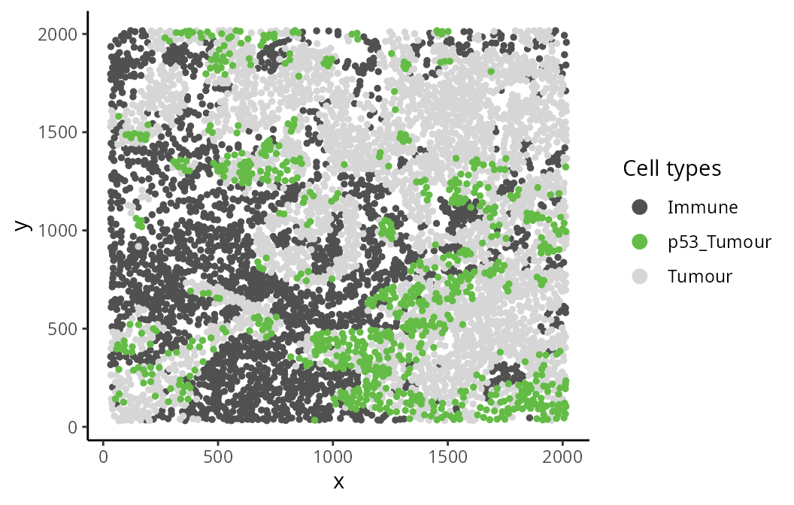
The Kontextual function accepts a
SingleCellExperiment object, or a single image, or list of
images from a SingleCellExperiment object, this gets passed
into the cells argument. The two cell types which will be
evaluated are specified in the to and from
arguments. A parent population must also be specified in the
parent argument, note the parent cell population must
include the to cell type. The argument r will
specify the radius which the cell relationship will be evaluated on.
Kontextual supports parallel processing, the number of
cores can be specified using the cores argument.
Kontextual can take a single value or multiple values for
each argument and will test all combinations of the arguments
specified.
We can calculate these relationships for a single radius.
p53_Kontextual <- Kontextual(
cells = kerenSPE,
image = 6,
r = 100,
from = "Immune",
to = "p53_Tumour",
parent = c("p53_Tumour", "Tumour"),
cellType = "cellTypeNew"
)
p53_Kontextual#> imageID test original kontextual r weightQuantile inhom edge
#> 1 6 Immune__p53_Tumour -23.49524 -1.856852 100 0.8 FALSE TRUE
#> includeZeroCells window window.length
#> 1 TRUE convex NAThe kontextCurve calculates the L-function value and
Kontextual values over a range of radii. While kontextPlot
plots these values. If the points lie above the red line (expected
pattern) then localisation is indicated for that radius, if the points
lie below the red line then dispersion is indicated. As seen in the
following plot Kontextual is able to correctly identify localisation
between p53+ tumour cells and immune cells in the example image for a
certain range of radii. The original L-function is not able to identify
localisation at any value of radii.
curves <- kontextCurve(
cells = kerenSPE,
image = "6",
from = "Immune",
to = "p53_Tumour",
parent = c("p53_Tumour", "Tumour"),
rs = seq(10, 510, 100),
cellType = "cellTypeNew",
cores = nCores
)
kontextPlot(curves)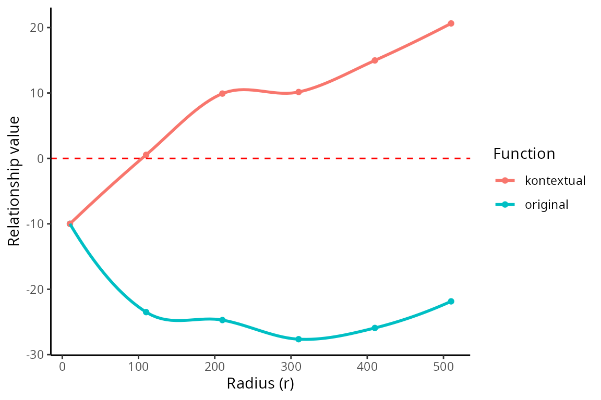
Alternatively all pairwise cell relationships and their corresponding
parents in the dataset can be tested. A data frame with all pairwise
combinations can be creating using the parentCombinations
function. This function takes in a vector of all the cells, as well as
all the parent vectors set up earlier. As shown below the output is a
data frame specifying the to, from, and
parent arguments for Kontextual.
# Get all relationships between cell types and their parents
parentDf <- parentCombinations(
all = all,
tumour,
bcells,
tcells,
myeloid,
endothelial,
mesenchymal,
tissue,
immune
)Rather than specifying to, from, and
parent in Kontextual, the output from
parentCombinations can be input into
Kontextual using the parentDf argument, to
examine all pairwise relationships in the dataset. This chunk will take
a significant amount of time to run (~20 minutes), for demonstration the
results have been saved and are loaded in.
# Running Kontextual on all relationships across all images.
kerenKontextual <- Kontextual(
cells = kerenSPE,
parentDf = parentDf,
r = 50,
cores = nCores
)
load(system.file("extdata", "kerenKontextual.rda", package = "ScdneySpatial"))To examine whether the features obtained from Statial
are associated with patient outcomes or groupings, we can use the
colTest function from SpicyR. To understand if
survival outcomes differ significantly between 2 patient groups, specify
type = "survival" in colTest. Here we examine
which features are most associated with patient survival using the
Kontextual values as an example. To do so, survival data is extracted
from kerenSPE and converted into the survival object
kerenSurv.
# Extracting survival data
survData = kerenSPE |>
colData() |>
data.frame() |>
select(imageID, Survival_days_capped., event, RECURRENCE_LABEL) |>
unique()
# Creating survival vector
kerenSurv = Surv(survData$Survival_days_capped, survData$event)
names(kerenSurv) = survData$imageIDIn addition to this, the Kontextual results must be converted from a
data.frame to a wide matrix, this can be done
using prepMatrix. Note, to extract the original L-function
values, specify column = "original" in
prepMatrix.
# Converting Kontextual result into data matrix
kontextMat = prepMatrix(kerenKontextual)
# Ensuring rownames of kontextMat match up with rownames of the survival vector
kontextMat = kontextMat[names(kerenSurv), ]
# Replace NAs with 0
kontextMat[is.na(kontextMat )] <- 0Finally, both the Kontextual matrix and survival object are passed
into colTest, with type = "survival" to obtain
the survival results.
# Running survival analysis
survivalResults = spicyR::colTest(kontextMat, kerenSurv, type = "survival")
head(survivalResults)#> coef se.coef pval adjPval
#> CD8_T_cell__Keratin_Tumour__immune -0.150 0.043 0.0006 0.21
#> CD4_T_cell__CD8_T_cell__tcells -0.054 0.019 0.0039 0.51
#> CD4_T_cell__CD8_T_cell__immune -0.040 0.015 0.0094 0.51
#> Endothelial__Mono_or_Neu__tissue -0.031 0.012 0.0110 0.51
#> Other_Immune__NK__myeloid 0.045 0.018 0.0120 0.51
#> Endothelial__CD8_T_cell__tissue -0.033 0.013 0.0120 0.51
#> cluster
#> CD8_T_cell__Keratin_Tumour__immune CD8_T_cell__Keratin_Tumour__immune
#> CD4_T_cell__CD8_T_cell__tcells CD4_T_cell__CD8_T_cell__tcells
#> CD4_T_cell__CD8_T_cell__immune CD4_T_cell__CD8_T_cell__immune
#> Endothelial__Mono_or_Neu__tissue Endothelial__Mono_or_Neu__tissue
#> Other_Immune__NK__myeloid Other_Immune__NK__myeloid
#> Endothelial__CD8_T_cell__tissue Endothelial__CD8_T_cell__tissueAs we can see from the results
CD8_T_cell__Keratin_Tumour__immune is the most significant
pairwise relationship which contributes to patient survival. That is the
relationship between CD8 T cells and Keratin+ Tumour cells, relative to
the parent population of all immune cells. We can see that there is a
negative coefficient associated with this relationship, which tells us a
decrease in localisation of CD8_T_cell and Keratin+ Tumour leads to
poorer survival outcomes for patients.
We can visualise this association sing a Kaplan-Meier curve. We must
first extract the Kontextual values of this relationship across all
images. Next we determine if CD8 T cells and Keratin+ Tumours are
relatively attracted or avoiding in each image, by comparing the
Kontextual value in each image to the median Kontextual value. Finally
we plot the Kaplan-Meier curve using the ggsurvfit
package.
As shown below, when CD8 T cells and Keratin+ Tumours are relatively more dispersed to one another, patients tend to have worse survival outcomes.
# Selecting most significant relationship
survRelationship = kontextMat[["CD8_T_cell__Keratin_Tumour__immune"]]
survRelationship = ifelse(survRelationship > median(survRelationship), "Localised", "Dispersed")
# Plotting Kaplan-Meier curve
survfit2(kerenSurv ~ survRelationship) |>
ggsurvfit() +
add_pvalue() +
ggtitle("CD8_T_cell__Keratin_Tumour__immune")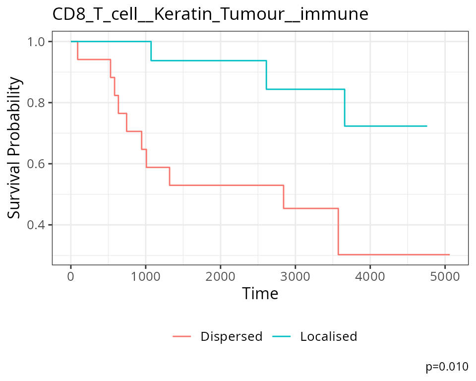
Are there changes in cell states associated with cell localisation?
Changes in cell phenotype can be analytically framed as the change in abundance of a gene or protein within a particular cell type. We can analytically determine whether continuous changes occur to a cell’s proteomic or transcriptomic signature as changes occur in its spatial proximity to another cell type. In the figures below we see the expression of a marker increased in cell type A as it grows closer in spatial proximity to cell type B. This can then be quantified with a scatterplot to determine statistical significance. In the next section of this workshop, we will be exploring the analytical functionalities of Statial which can uncover these continuous changes in cell state.

The first step in analysing these changes is to calculate the spatial
proximity (getDistances) and abundance
(getAbundances) of each cell to every cell type. These
values will then be stored in the reducedDims slot of the
SpatialExperiment object under the names
distances and abundances respectively.
kerenSPE <- getDistances(kerenSPE,
maxDist = 200)
kerenSPE <- getAbundances(kerenSPE,
r = 50)
reducedDim(kerenSPE, "abundances")[is.na(reducedDim(kerenSPE, "abundances"))] <- 0First, let’s examine the same effect observed earlier with Kontextual. To avoid redefining cell types we’ll examine the distance between p53-positive tumour cells and macrophages in the context of total keratin/tumour cells for image 6.
Statial provides two main functions to assess this relationship -
calcStateChanges and plotStateChanges. We can
use calcStateChanges to examine the relationship between 2
cell types for 1 marker in a specific image. Similar to
Kontextual, we can specify the two cell types with the
to and from arguments, and the marker of
interest with the marker argument. We can appreciate that
the fdr statistic for this relationship is significant, and
with a negative coef, or coefficient value, indicating that
the expression of p53 in keratin/tumour cells decreases as distance from
macrophages increases.
stateChanges <- calcStateChanges(
cells = kerenSPE,
type = "distances",
image = "6",
from = "Keratin_Tumour",
to = "Macrophages",
marker = "p53")
stateChanges#> imageID primaryCellType otherCellType marker coef tval
#> 1 6 Keratin_Tumour Macrophages p53 -0.001402178 -7.010113
#> pval fdr
#> 1 2.868257e-12 2.868257e-12Statial provides a convenient function for visualising this
relationship - plotStateChanges. Similar to
Kontextual and calcStateChanges, we can
specify the cell types to be evaluated with the to and
from arguments and the marker of interest with
marker.
Through this analysis, we can observe that keratin/tumour cells closer to a group of macrophages tend to have higher expression of p53, as observed in the first graph. This relationship is quantified with the second graph, showing an overall decrease of p53 expression in keratin/tumour cells as distance to macrophages increase.
These results allow us to essentially arrive at the same result as Kontextual, which calculated a localisation between p53+ keratin/tumour cells and macrophages in the wider context of keratin/tumour cells.
p <- plotStateChanges(
cells = kerenSPE,
type = "distances",
image = "6",
from = "Keratin_Tumour",
to = "Macrophages",
marker = "p53",
size = 1,
shape = 19,
interactive = FALSE,
plotModelFit = FALSE,
method = "lm")
p$image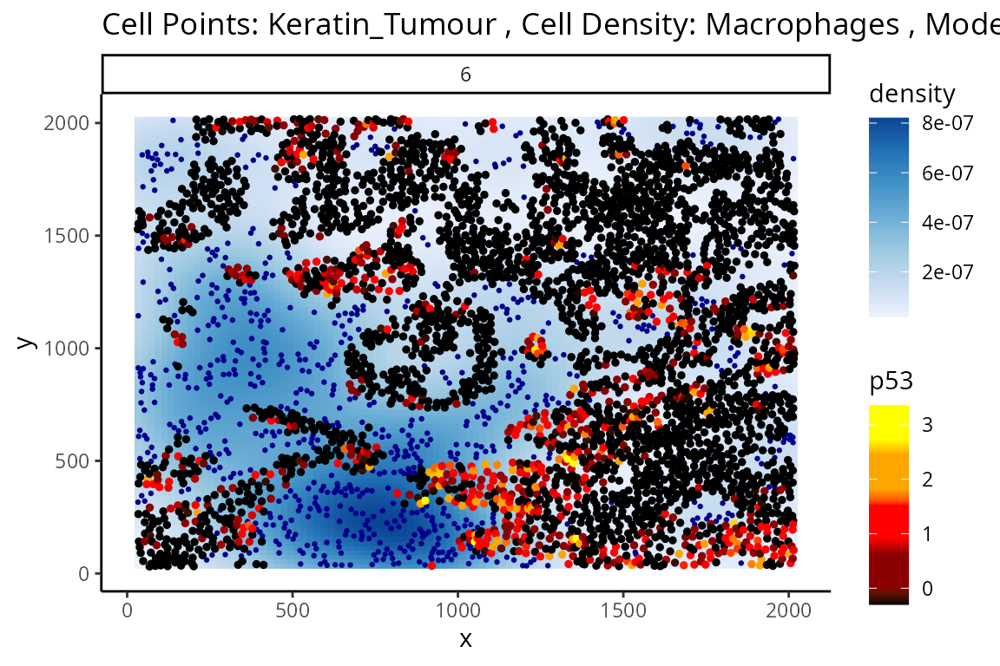
p$scatter +
labs(y = "p53 expression in Keratin_Tumour",
x = "Distance of Keratin_Tumour to Macrophages")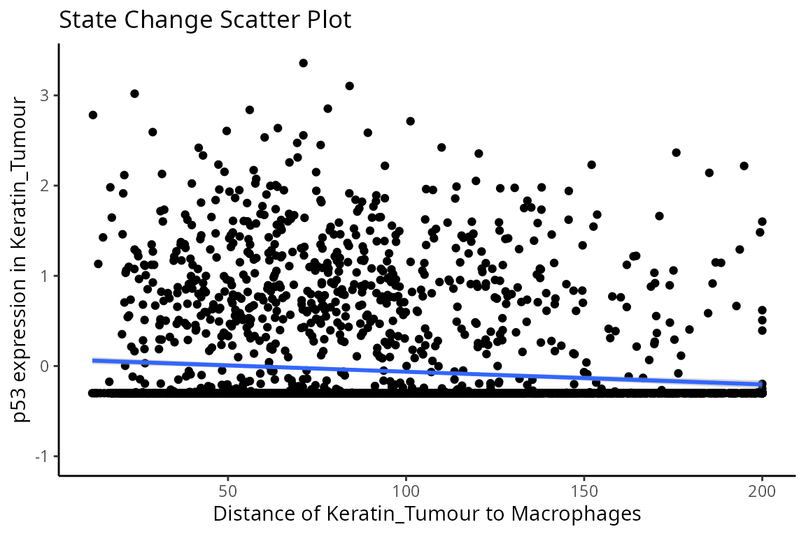
Question
- What information does this form of analysis provide that Kontextual does not?
- Is this observation of localisation consistent across images?
- Can you find an interaction where the coefficient is positive? i.e.
marker expression in the
tocell type rises as distances increases from thefromcell type.
Beyond looking at single cell-to-cell interactions for a single
image, we can also look at all interactions across all images. The
calcStateChanges function provided by Statial can be
expanded for this exact purpose - by not specifying cell types, a
marker, or an image, calcStateChanges will examine the most
significant correlations between distance and marker expression across
the entire dataset. Here, we’ve calculated all state changes across all
images in case you would like to have a play, but first we’ll be taking
a closer examination at the most significant interactions found within
image 6 of the Keren et al. dataset.
stateChanges <- calcStateChanges(
cells = kerenSPE,
type = "distances",
minCells = 100)
stateChanges |>
filter(imageID == 6) |>
head(n = 10)#> imageID primaryCellType otherCellType marker coef tval
#> 1 6 Keratin_Tumour Unidentified Na 0.004218419 25.03039
#> 2 6 Keratin_Tumour Macrophages HLA_Class_1 -0.003823497 -24.69629
#> 3 6 Keratin_Tumour CD4_T_cell HLA_Class_1 -0.003582774 -23.87797
#> 4 6 Keratin_Tumour Unidentified Beta.catenin 0.005893120 23.41953
#> 5 6 Keratin_Tumour CD8_T_cell HLA_Class_1 -0.003154544 -23.13804
#> 6 6 Keratin_Tumour DC_or_Mono HLA_Class_1 -0.003353834 -22.98944
#> 7 6 Keratin_Tumour dn_T_CD3 HLA_Class_1 -0.003123446 -22.63197
#> 8 6 Keratin_Tumour Tumour HLA_Class_1 0.003684079 21.94265
#> 9 6 Keratin_Tumour CD4_T_cell Fe -0.003457338 -21.43550
#> 10 6 Keratin_Tumour CD4_T_cell phospho.S6 -0.002892457 -20.50767
#> pval fdr
#> 1 6.971648e-127 3.357294e-123
#> 2 7.814253e-124 3.386756e-120
#> 3 1.745242e-116 5.602971e-113
#> 4 1.917245e-112 5.730680e-109
#> 5 5.444541e-110 1.498225e-106
#> 6 1.053130e-108 2.808827e-105
#> 7 1.237988e-105 2.980851e-102
#> 8 8.188258e-100 1.689930e-96
#> 9 1.287478e-95 2.325010e-92
#> 10 3.928912e-88 5.821606e-85In image 6, the majority of the top 10 most significant interactions occur between keratin/tumour cells and an immune population, and many of these interactions appear to involve the HLA class I ligand.
We can examine some of these interactions further with the
plotStateChanges function. Taking a closer examination of
the relationship between macrophages and keratin/tumour HLA class I
expression, the plot below shows us a clear visual correlation - as
macrophage density increases, keratin/tumour cells increase their
expression HLA class I.
Biologically, HLA Class I is a ligand which exists on all nucleated cells, tasked with presenting internal cell antigens for recognition by the immune system, marking aberrant cells for destruction by either CD8+ T cells or NK cells.
p <- plotStateChanges(
cells = kerenSPE,
type = "distances",
image = "6",
from = "Keratin_Tumour",
to = "Macrophages",
marker = "HLA_Class_1",
size = 1,
shape = 19,
interactive = FALSE,
plotModelFit = FALSE,
method = "lm")
p$image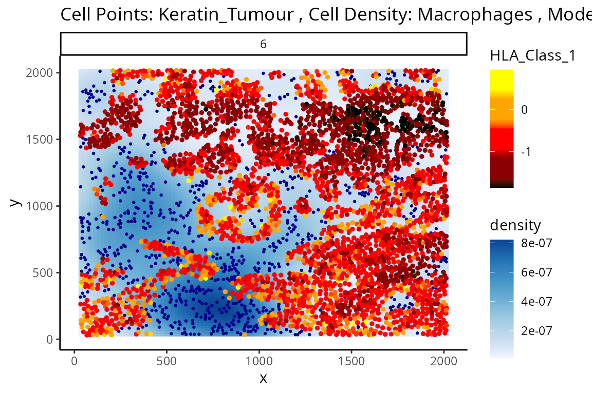
p$scatter +
labs(y = "HLA_Class_1 expression in Keratin_Tumour",
x = "Distance of Keratin_Tumour to Macrophages")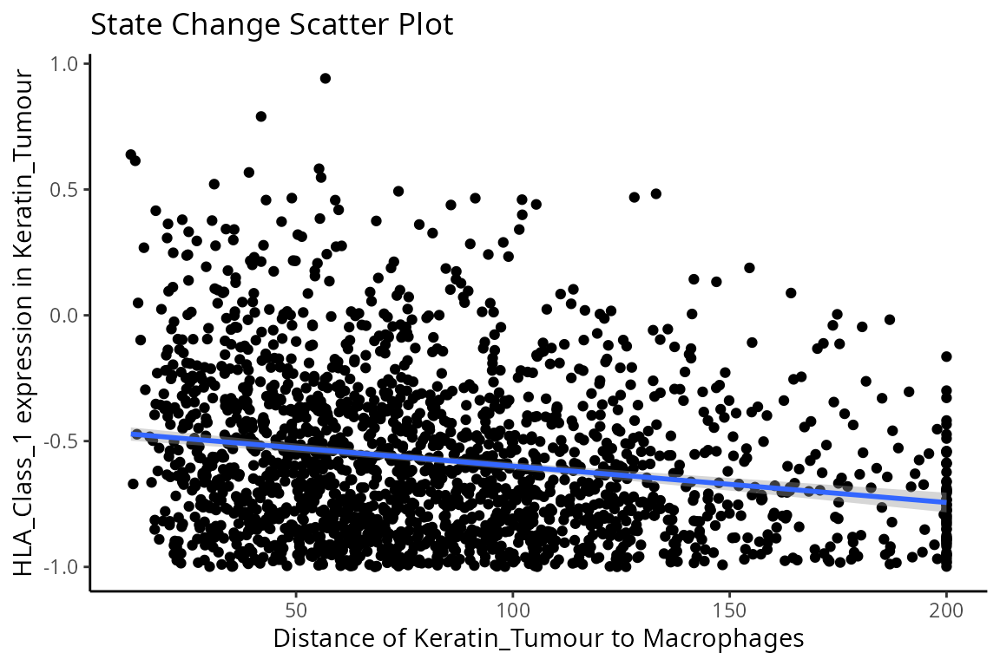
Now, we can take a look at the top 10 most significant results across all images.
stateChanges |> head(n = 10)#> imageID primaryCellType otherCellType marker coef
#> 69468 37 Endothelial Tumour Lag3 -0.001621517
#> 144255 11 Neutrophils NK CD56 -0.059936866
#> 16402 35 CD4_T_cell B_cell CD20 -0.029185750
#> 16498 35 CD4_T_cell DC_or_Mono CD20 0.019125946
#> 4891 35 B_cell DC_or_Mono phospho.S6 0.005282065
#> 16507 35 CD4_T_cell DC_or_Mono phospho.S6 0.004033218
#> 4885 35 B_cell DC_or_Mono HLA.DR 0.011120703
#> 5043 35 B_cell Other_Immune P 0.011182182
#> 16354 35 CD4_T_cell dn_T_CD3 CD20 0.016349492
#> 4888 35 B_cell DC_or_Mono H3K9ac 0.005096632
#> tval pval fdr
#> 69468 -4.916884e+14 0.000000e+00 0.000000e+00
#> 144255 -2.172437e+15 0.000000e+00 0.000000e+00
#> 16402 -4.057355e+01 7.019343e-282 4.056315e-277
#> 16498 4.053436e+01 1.891267e-281 8.196894e-277
#> 4891 4.041385e+01 5.306590e-278 1.839933e-273
#> 16507 3.472882e+01 4.519947e-219 1.305986e-214
#> 4885 3.415344e+01 8.401034e-212 2.080612e-207
#> 5043 3.414375e+01 1.056403e-211 2.289265e-207
#> 16354 3.391901e+01 1.219488e-210 2.349045e-206
#> 4888 3.399856e+01 3.266533e-210 5.662959e-206Immediately, we can appreciate that a couple of interactions appear a bit strange. One of the most significant interactions occurs between B cells and CD4 T cells, where CD4 T cells are found to increase in CD20 expression when in close proximity to B cells. Biologically, CD20 is a highly specific ligand for B cells, and under healthy circumstances are usually not expressed in T cells.
Could this potentially be an artefact of
calcStateChanges? We can examine the image through the
plotStateChanges function, where we indeed observe an
apparent localisation between B cells and T cells.
Question
Are there any other interactions here that you think might not make biological sense?
Does the relationship between T cell CD20 expression and B cell proximity occur across images?
-
Why are the majority of most significant interactions occurring in image 35?
HINT: Configure the parameters of
plotStateChangesto examine some these other significant interactions. Do they look like artefacts?
p <- plotStateChanges(
cells = kerenSPE,
type = "distances",
image = "35",
from = "CD4_T_cell",
to = "B_cell",
marker = "CD20",
size = 1,
shape = 19,
interactive = FALSE,
plotModelFit = FALSE,
method = "lm")
p$image +
labs(y = "CD20 expression in CD4_T_cell",
x = "Distance of B_cell to CD4_T_cell")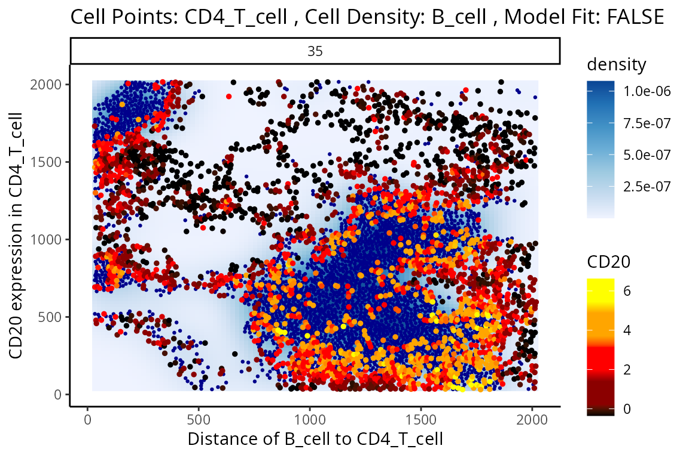
p$scatter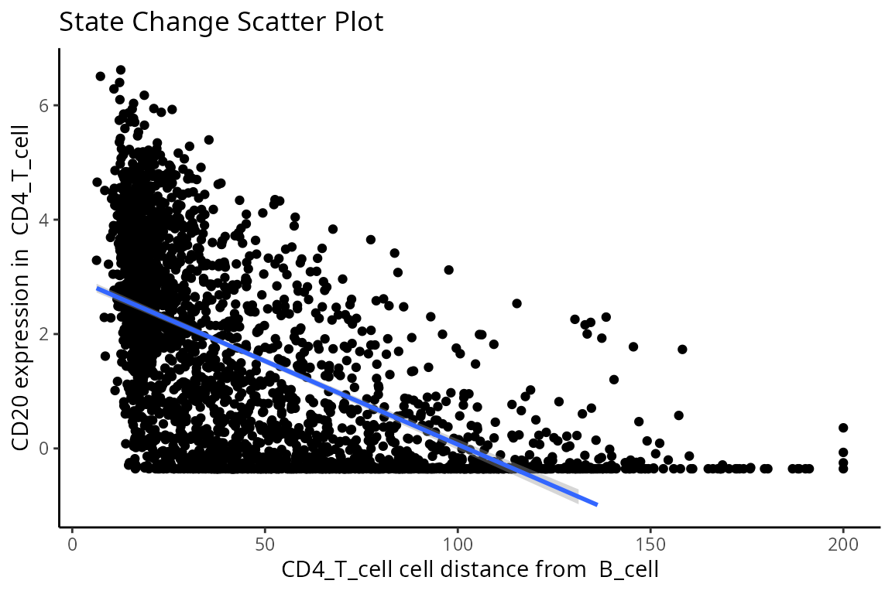
So why are T cells expressing CD20? This brings us to a key limitation of cell segmentation.
Contamination, or more specifically known as lateral marker spill over, is an issue that results in a cell’s marker expressions being wrongly attributed to another adjacent cell. This issue arises from incorrect segmentation where components of one cell are wrongly determined as belonging to another cell. Alternatively, this issue can arise when antibodies used to tag and measure marker expressions do not latch on properly to a cell of interest, thereby resulting in residual markers being wrongly assigned as belonging to a cell near the intended target cell. It is important that we either correct or account for this incorrect attribution of markers in our modelling process. This is critical in understanding whether significant cell-cell interactions detected are an artifact of technical measurement errors driven by spill over or are real biological changes that represent a shift in a cell’s state.

To circumvent this problem, Statial provides a function
that predicts the probability that a cell is any particular cell type -
calcContamination. calcContamination returns a
dataframe of probabilities demarcating the chance of a cell being any
particular cell type. This dataframe is stored under
contaminations in the reducedDim slot of the
SpatialExperiment object. It also provides the
rfMainCellProb column, which provides the probability that
a cell is indeed the cell type it has been designated. E.g. For a cell
designated as a CD8+ T cell, rfMainCellProb could give a 80% chance that
the cell is indeed CD8+ T cell, due to contamination.
We can then introduce these probabilities as covariates into our
linear model by setting contamination = TRUE as a parameter
in our calcStateChanges function. However, this is not a
perfect solution for the issue of contamination. As we can see, despite
factoring in contamination into our linear model, the correlation
between B cell density and CD20 expression in CD4+ T cells remains one
of the most significant interactions in our model.
kerenSPE <- calcContamination(kerenSPE)
stateChangesCorrected <- calcStateChanges(
cells = kerenSPE,
type = "distances",
minCells = 100,
contamination = TRUE)
stateChangesCorrected |> head(n = 20)#> imageID primaryCellType otherCellType marker coef
#> 69468 37 Endothelial Tumour Lag3 -0.001621517
#> 144255 11 Neutrophils NK CD56 -0.059936866
#> 16402 35 CD4_T_cell B_cell CD20 -0.025083624
#> 16498 35 CD4_T_cell DC_or_Mono CD20 0.016225621
#> 4891 35 B_cell DC_or_Mono phospho.S6 0.004397271
#> 16354 35 CD4_T_cell dn_T_CD3 CD20 0.013867647
#> 16507 35 CD4_T_cell DC_or_Mono phospho.S6 0.003630126
#> 16357 35 CD4_T_cell dn_T_CD3 HLA.DR 0.010356673
#> 85540 3 Keratin_Tumour DC Ca -0.013939833
#> 3697 28 B_cell NK Na -0.004462312
#> 4741 35 B_cell dn_T_CD3 HLA.DR 0.009056688
#> 80974 20 Keratin_Tumour Tumour HLA_Class_1 0.002965555
#> 82078 23 Keratin_Tumour Unidentified HLA_Class_1 0.003188059
#> 5083 35 B_cell Other_Immune phospho.S6 0.004790796
#> 4885 35 B_cell DC_or_Mono HLA.DR 0.008889339
#> 5043 35 B_cell Other_Immune P 0.008256807
#> 5080 35 B_cell Other_Immune H3K9ac 0.005061792
#> 81737 21 Keratin_Tumour DC Pan.Keratin -0.005993976
#> 4747 35 B_cell dn_T_CD3 phospho.S6 0.003767236
#> 16363 35 CD4_T_cell dn_T_CD3 phospho.S6 0.002966570
#> tval pval fdr
#> 69468 -2.805747e+14 0.000000e+00 0.000000e+00
#> 144255 -2.265619e+15 0.000000e+00 0.000000e+00
#> 16402 -3.527286e+01 1.471188e-224 8.501655e-220
#> 16498 3.433303e+01 9.709612e-215 4.208219e-210
#> 4891 3.070953e+01 5.072179e-177 1.758656e-172
#> 16354 3.022328e+01 3.883378e-173 1.122057e-168
#> 16507 2.993728e+01 2.466479e-170 6.108516e-166
#> 16357 2.926312e+01 8.819909e-164 1.911307e-159
#> 85540 -2.961537e+01 7.578873e-163 1.459885e-158
#> 3697 -2.885743e+01 5.843841e-156 1.013106e-151
#> 4741 2.645733e+01 7.958696e-137 1.254312e-132
#> 80974 2.595077e+01 1.410980e-135 2.038431e-131
#> 82078 2.585593e+01 5.728680e-135 7.639547e-131
#> 5083 2.612732e+01 7.639758e-134 9.460367e-130
#> 4885 2.577910e+01 1.014405e-130 1.172402e-126
#> 5043 2.570769e+01 4.402113e-130 4.769772e-126
#> 5080 2.539252e+01 2.781691e-127 2.836719e-123
#> 81737 -2.470084e+01 8.985348e-127 8.654038e-123
#> 4747 2.518766e+01 1.793125e-125 1.636114e-121
#> 16363 2.512759e+01 2.089201e-125 1.810951e-121However, this does not mean factoring in contamination into our linear model was ineffective. In general, cell type specific markers such as CD68, CD45, and CD20 should not change in cells they are not specific to. Therefore, relationships detected to be significant involving these cell type markers are likely false positives and will be treated as such for the purposes of evaluation.
Plotting the relationship between false positives and true positives, we’d expect the contamination correction to be greatest in relationships which are detected to be more significant.
cellTypeMarkers <- c("CD3", "CD4", "CD8", "CD56", "CD11c", "CD68", "CD45", "CD20")
values = c("blue", "red")
names(values) <- c("None", "Corrected")
df <- rbind(data.frame(TP =cumsum(stateChanges$marker %in% cellTypeMarkers), FP = cumsum(!stateChanges$marker %in% cellTypeMarkers), type = "None"),
data.frame(TP =cumsum(stateChangesCorrected$marker %in% cellTypeMarkers), FP = cumsum(!stateChangesCorrected$marker %in% cellTypeMarkers), type = "Corrected"))
ggplot(df, aes(x = TP, y = FP, colour = type)) + geom_line()+ labs(y = "Cell state marker", x = "Cell type marker") + scale_colour_manual(values = values)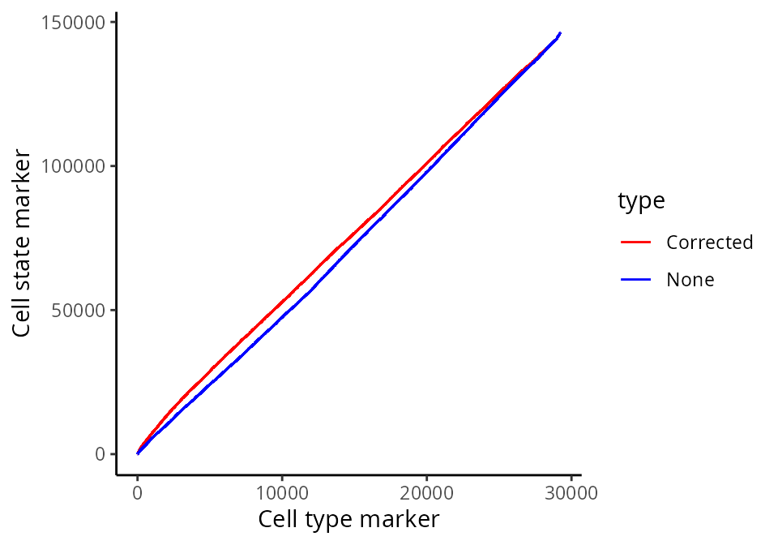
Here, we zoom in on the ROC curve where the top 100 lowest p values occur, where we indeed see more true positives than false positives with contamination correction.
ggplot(df, aes(x = TP, y = FP, colour = type)) + geom_line()+ xlim(0,100) + ylim(0,1000)+ labs(y = "Cell state marker", x = "Cell type marker") + scale_colour_manual(values = values)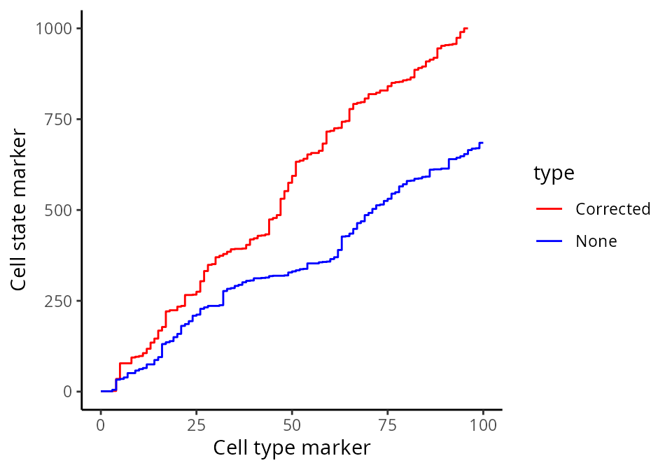
Question
- What can we conclude from the above ROC graphs?
Similiar to Kontextual, we can run a similar survival
analysis using our state changes results. Here, prepMatrix
extracts the coefficients, or the coef column of
stateChanges by default. To use the t values instead,
specify column = "tval" in the prepMatrix
function.
# Preparing features for Statial
stateMat <- prepMatrix(stateChanges)
# Ensuring rownames of stateMat match up with rownames of the survival vector
stateMat <- stateMat[names(kerenSurv), ]
# Remove some very small values
stateMat <- stateMat[,colMeans(abs(stateMat)>0.0001)>.8]
survivalResults <- colTest(stateMat, kerenSurv, type = "survival")
head(survivalResults)#> coef se.coef pval adjPval
#> Macrophages__CD4_T_cell__CD138 440 110 8.1e-05 0.054
#> Macrophages__Other_Immune__HLA_Class_1 -500 170 2.9e-03 0.620
#> Keratin_Tumour__Mesenchymal__dsDNA -930 330 4.9e-03 0.620
#> Keratin_Tumour__CD8_T_cell__Keratin6 -220 80 5.2e-03 0.620
#> Keratin_Tumour__Mono_or_Neu__Pan.Keratin -260 94 6.0e-03 0.620
#> Macrophages__Other_Immune__CD4 -480 180 7.6e-03 0.620
#> cluster
#> Macrophages__CD4_T_cell__CD138 Macrophages__CD4_T_cell__CD138
#> Macrophages__Other_Immune__HLA_Class_1 Macrophages__Other_Immune__HLA_Class_1
#> Keratin_Tumour__Mesenchymal__dsDNA Keratin_Tumour__Mesenchymal__dsDNA
#> Keratin_Tumour__CD8_T_cell__Keratin6 Keratin_Tumour__CD8_T_cell__Keratin6
#> Keratin_Tumour__Mono_or_Neu__Pan.Keratin Keratin_Tumour__Mono_or_Neu__Pan.Keratin
#> Macrophages__Other_Immune__CD4 Macrophages__Other_Immune__CD4Question
- Are the survival results the same for both the distance and abundance metrics?
- Do these survival results change with contamination correction?
- Why might the survival results look the same/different between distance and abundance?
For our state changes results,
Macrophages__CD4_T_cell__CD138 is the most significant
pairwise relationship which contributes to patient survival. That is,
the relationship between CD138 expression in macrophages as their
spatial proximity to CD4 T cells change. The positive coeffcient
associated with this relationship tells us that lower CD138 expression
in macrophages nearby CD4 T cells lead to poorer survival outcomes for
patients.
# Selecting the most significant relationship
survRelationship = stateMat[["Macrophages__CD4_T_cell__CD138"]]
survRelationship = ifelse(survRelationship > median(survRelationship), "Higher expressed in close cells", "Lower expressed in close cells")
# Plotting Kaplan-Meier curve
survfit2(kerenSurv ~ survRelationship) |>
ggsurvfit() +
add_pvalue() +
ggtitle("Macrophages__CD4_T_cell__CD138")
Question
- How should these coefficients be interpreted?
- Do any of these relationships makes sense?
- Could you visualise representative images?
How do we generate a molecular representation for each individual?
The next section of this workshop will be dedicated to
scFeatures - a straightforward package for generating a
suite of molecular representations regarding a patient, taking a matrix
of proteins x cells as input. The molecular representation
is interpretable and hence facilitates downstream analysis of the
individual. In general, scFeatures generates features
across six categories representing different molecular views of cellular
characteristics. These include:
- cell type proportions
- cell type specific gene expressions
- cell type specific pathway expressions
- cell type specific cell-cell interaction (CCI) scores
- overall aggregated gene expressions
- spatial metrics
The different types of features constructed enable a more
comprehensive multi-view understanding of each individual from a matrix
of spot x cells. By default, the function will generate a
total of 13 different types of features (feature_types) shown below and
store them in a list. All generated feature types are stored in a matrix
of samples x features.
## [1] "proportion_raw" "proportion_logit" "proportion_ratio"
## [4] "gene_mean_celltype" "gene_prop_celltype" "gene_cor_celltype"
## [7] "gene_mean_bulk" "gene_prop_bulk" "gene_cor_bulk"
## [10] "L_stats" "celltype_interaction" "morans_I"
## [13] "nn_correlation"There are different ways you can use scFeatures to
generate molecular representations for individuals and it requires the
following information for spatial data.
- data,
- sample,
- X coordinates,
- Y coordinates,
- feature_types, and
- type
There are a total of 13 different types of features (feature_types)
that you can choose to generate. The argument type refers the type of
input data we have. This is either scrna (single-cell
RNA-sequencing data), spatial_p (spatial proteomics data),
or spatial_t (single cell spatial data).
Suppose that we are interested in determining the proportion of each
cell type in each individual within each region. It is necessary to
specify type = spatial_p to reflect that we have spatial
proteomics data and feature_types = proportion_raw to
indicate we intend to calculate cell type proportion for each of the
region-specific sub-cell types.
#> B_cell CD4_T_cell CD8_T_cell DC DC_or_Mono
#> 1 0.221985678 0.047029224 0.03348171 0.0003870718 0.034062319
#> 2 0.000660502 0.006935271 0.08091149 0.0122192867 0.002972259
#> 3 0.067616785 0.077751386 0.07854315 0.0057007126 0.068725257
#> 4 0.049525817 0.110341713 0.04576246 0.0003010688 0.068944754
#> 5 0.000554939 0.047169811 0.09822420 0.0005549390 0.061598224The output of scFeatures, scfeatures_result, is a list
of 13 dataframes, which each represent a different molecular feature of
a patient. Below, we give an example visualisation of the raw cell type
proportions for each patient.
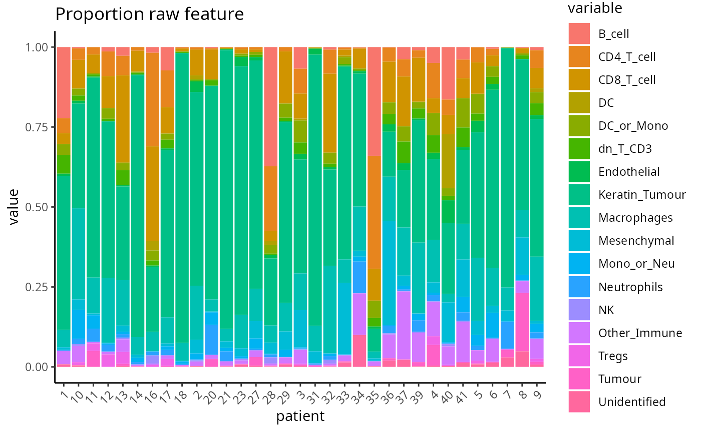
Can I identify distinct neighbourhoods or regions of cells in my images?
We can cluster areas with similar spatial interactions to identify
regions using the lisaClust package on Bioconductor. Here
we set k = 5 to identify 5 regions.
So what are some ways I can check that my region clustering has
worked effectively? One way we can do this is to use the
hatchingPlot function to visualise the regions identified
by lisaClust.
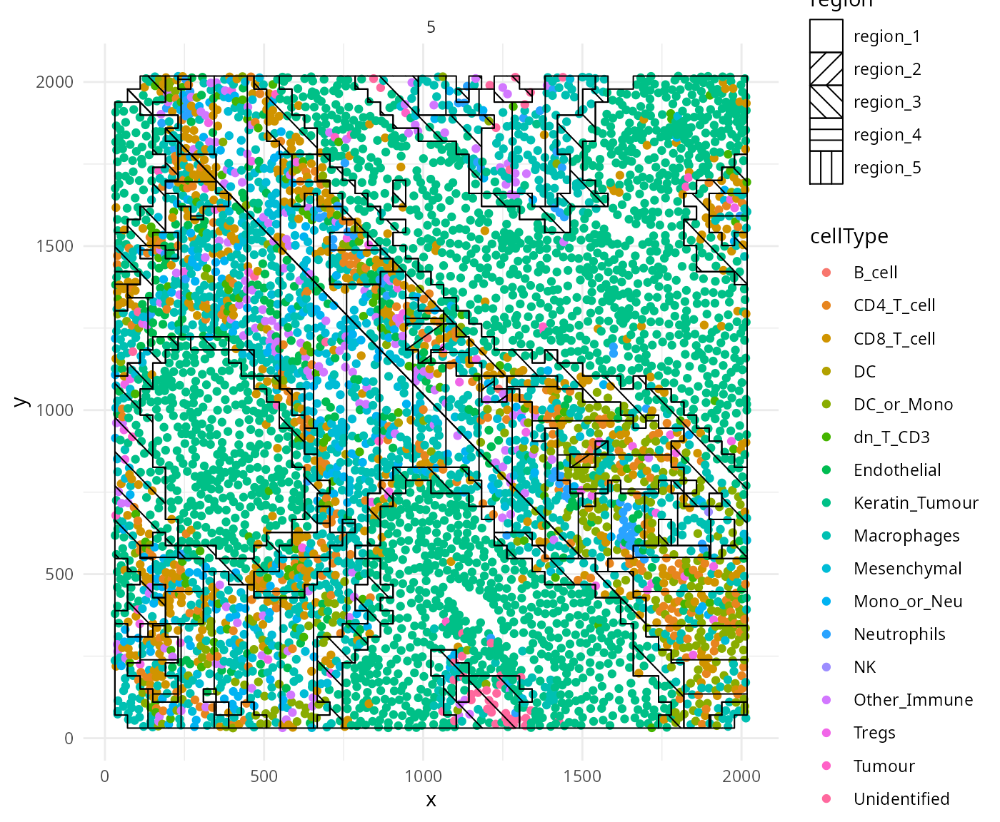
We can appreciate that the regions have separated out nicely for image 5, with region 1 clearly being a tumour region, region 5 a non-tumour region, and region 3 being the tumour-immune interaction region.
We can also use the regionMap function to get a more
quantitative determination of what each region represents, to look at
which cell types are encountered in which regions.
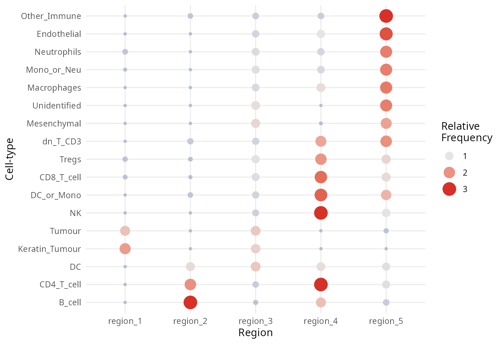
One feature we might be interested in exploring is to examine the
molecular profile of each region or cells within each region.
Statial provides functionality to identify the average
marker expression of a given cell type in a given region, using the
getMarkerMeans function. Similar to the analysis above,
these features can also be used for survival analysis.
#> coef se.coef pval adjPval
#> Si__Unidentified__region_4 -3.4 1.00 0.00073 0.47
#> HLA_Class_1__Macrophages__region_4 -1.7 0.50 0.00085 0.47
#> CD45RO__dn_T_CD3__region_4 -2.4 0.73 0.00089 0.47
#> HLA_Class_1__Neutrophils__region_4 -1.7 0.51 0.00110 0.47
#> CD209__CD8_T_cell__region_1 10.0 3.20 0.00140 0.47
#> HLA_Class_1__Mono_or_Neu__region_1 -1.6 0.50 0.00150 0.47
#> cluster
#> Si__Unidentified__region_4 Si__Unidentified__region_4
#> HLA_Class_1__Macrophages__region_4 HLA_Class_1__Macrophages__region_4
#> CD45RO__dn_T_CD3__region_4 CD45RO__dn_T_CD3__region_4
#> HLA_Class_1__Neutrophils__region_4 HLA_Class_1__Neutrophils__region_4
#> CD209__CD8_T_cell__region_1 CD209__CD8_T_cell__region_1
#> HLA_Class_1__Mono_or_Neu__region_1 HLA_Class_1__Mono_or_Neu__region_1- What are some ways you could identify the “right” number of regions?
- Can you think of some ways to generate additional features using these regions?
Module 7: Patient classification
Finally we demonstrate how we can use the Bioconductor package
ClassifyR to perform patient classification with the
features generated from Statial and
scFeatures. In addition to this, we also calculate cell
type proportions and region proportions using the getProp
function in spicyR. Here we perform 5 fold cross validation
with 20 repeats, using a CoxPH model for survival classification.
To prepare our metrics for classification, first we must convert our
dataframes into matrix format. This can be accomplished, as we did
earlier, with the prepMatrix function of
Statial. As we generated matrices for
Kontextual and the distance metric of
SpatioMark earlier, we will now be generating matrices for
the SpatioMark corrected distance metric, and the abundance
metrics.
We can also prepare a metric for region proportions, to look at whether the percentage of area each region occupies in an image is capable of predicting survival.
## Distances Corrected Matrix
stateMatCorDist <- prepMatrix(stateChangesCorrected)
stateMatCorDist <- stateMatCorDist[names(kerenSurv), ]
stateMatCorDist[is.na(stateMatCorDist)] <- 0
# Remove some very small values
stateMatCorDist <- stateMatCorDist[,colMeans(abs(stateMatCorDist)>0.0001)>.8]
reducedDim(kerenSPE, "abundances")[is.na(reducedDim(kerenSPE, "abundances"))] <- 0
## Abundances
stateChangesAbund <- calcStateChanges(
cells = kerenSPE,
type = "abundances",
minCells = 100)
stateMatAbund <- prepMatrix(stateChangesAbund)
stateMatAbund <- stateMatAbund[names(kerenSurv), ]
stateMatAbund[is.na(stateMatAbund)] <- 0
# Remove some very small values
stateMatAbund <- stateMatAbund[,colMeans(abs(stateMatAbund)>0.0001)>.8]
## Abundances Corrected
stateChangesCorrectedAbund <- calcStateChanges(
cells = kerenSPE,
type = "abundances",
minCells = 100,
contamination = TRUE)
stateMatCorAbund <- prepMatrix(stateChangesCorrectedAbund)
stateMatCorAbund <- stateMatCorAbund[names(kerenSurv), ]
stateMatCorAbund[is.na(stateMatCorAbund)] <- 0
# Remove some very small values
stateMatCorAbund <- stateMatCorAbund[,colMeans(abs(stateMatCorAbund)>0.0001)>.8]
## Region proportions
regionProp <- getProp(kerenSPE,
feature = "region",
imageID = "imageID")Then we compile these matrices into a list. scFeatures
conveniently provides all its metrics as part of a list of matrices
already, allowing us to easily combine our Statial metrics
with scFeatures into 1 list of matrices. We then input this
list into the crossValidate function of
ClassifyR, specifying our survival object created earlier,
and 5 folds of cross validation with 20 repeats. We will also be using a
feature selection algorithm selecting for 10 features for each
metric.
statialFeatureList <- list(`SpatioMark Distances` = stateMat,
`SpatioMark Corrected Distances` = stateMatCorDist,
`SpatioMark Abundances` = stateMatAbund,
`SpatioMark Corrected Abundances` = stateMatCorAbund,
`Kontextual` = kontextMat,
`Region Marker Means` = cellTypeRegionMeans,
`Region Proportions` = regionProp)
set.seed(51773)
featureList <- c(statialFeatureList, scfeatures_result)
featureList <- lapply(featureList, function(x)x[names(kerenSurv),])
kerenCV = crossValidate(
measurements = featureList,
outcome = kerenSurv,
classifier = "CoxPH",
selectionMethod = "CoxPH",
nFolds = 5,
nFeatures = 10,
nRepeats = 20,
nCores = nCores
)
load(system.file("extdata", "featureList.rda", package = "ScdneySpatial"))
load(system.file("extdata", "kerenCV.rda", package = "ScdneySpatial"))Next, we use the performancePlot function to assess the
C-index from each repeat of the 5-fold cross-validation.
performancePlot(kerenCV,
characteristicsList = list(x = "Assay Name"),
orderingList = list("Assay Name" = c(names(statialFeatureList), names(scfeatures_result)))) +
theme(axis.text.x = element_text(angle = 45, vjust = 1, hjust=1)) +
geom_rect(aes(xmin = 0, xmax = 5.5, ymin = -Inf, ymax = Inf), fill = "red", alpha = 0.2) +
geom_rect(aes(xmin = 5.5, xmax = 7.5, ymin = -Inf, ymax = Inf), fill = "yellow", alpha = 0.2) +
geom_rect(aes(xmin = 7.5, xmax = 16.5, ymin = -Inf, ymax = Inf), fill = "blue", alpha = 0.2) +
geom_rect(aes(xmin = 16.5, xmax = 21, ymin = -Inf, ymax = Inf), fill = "green", alpha = 0.2)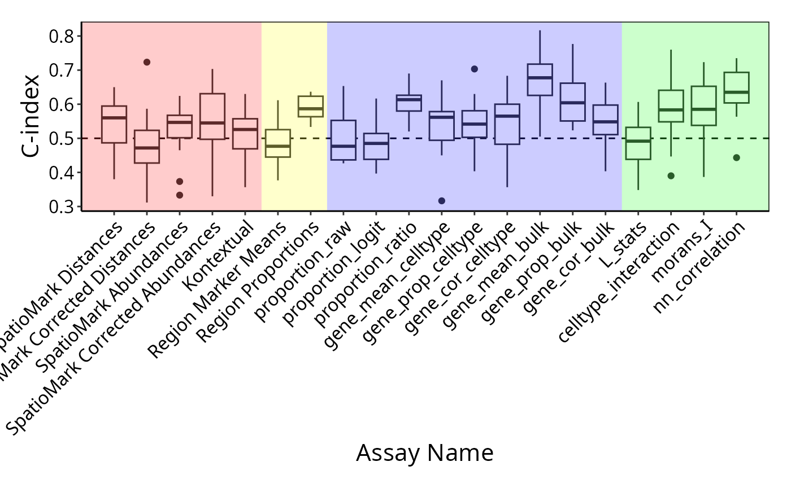
Unfortunately, our spatial metrics did not outperform some of the
simpler metrics generated by scFeatures, particularly
gene_mean_bulk, which simply produces a matrix describing
the average gene expression of each marker in each patient. To examine
another variable which might be of interest, we used recurrence as
another outcome to determine whether our spatial metrics could uncover
signal.
outcome <- survData$RECURRENCE_LABEL
names(outcome) <- survData$imageID
outcome <- factor(outcome)
featureList <- lapply(featureList, function(x)x[names(outcome),])
kerenCV_recurrence = crossValidate(
measurements = featureList,
outcome = outcome,
classifier = "elasticNetGLM",
selectionMethod = "auto",
nFolds = 5,
nFeatures = 10,
nRepeats = 20,
nCores = nCores
)Again, using performancePlot, this time for recurrence,
we found better performance in select spatial metrics.
load(system.file("extdata", "recurrenceCV.rda", package = "ScdneySpatial"))
performancePlot(kerenCV_recurrence,
characteristicsList = list(x = "Assay Name"),
orderingList = list("Assay Name" = c(names(statialFeatureList), names(scfeatures_result)))) +
theme(axis.text.x = element_text(angle = 45, vjust = 1, hjust=1)) +
geom_rect(aes(xmin = 0, xmax = 5.5, ymin = -Inf, ymax = Inf), fill = "red", alpha = 0.2) +
geom_rect(aes(xmin = 5.5, xmax = 7.5, ymin = -Inf, ymax = Inf), fill = "yellow", alpha = 0.2) +
geom_rect(aes(xmin = 7.5, xmax = 16.5, ymin = -Inf, ymax = Inf), fill = "blue", alpha = 0.2) +
geom_rect(aes(xmin = 16.5, xmax = 21, ymin = -Inf, ymax = Inf), fill = "green", alpha = 0.2)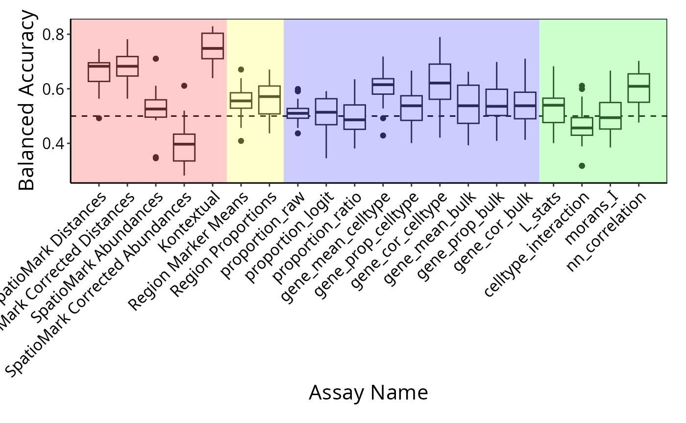
Questions
- Discuss among your table why spatial metrics might perform better for recurrence compared to survival.
#> R version 4.3.1 (2023-06-16)
#> Platform: x86_64-pc-linux-gnu (64-bit)
#> Running under: Debian GNU/Linux 12 (bookworm)
#>
#> Matrix products: default
#> BLAS: /usr/lib/x86_64-linux-gnu/openblas-pthread/libblas.so.3
#> LAPACK: /usr/lib/x86_64-linux-gnu/openblas-pthread/libopenblasp-r0.3.21.so; LAPACK version 3.11.0
#>
#> locale:
#> [1] LC_CTYPE=C.UTF-8 LC_NUMERIC=C LC_TIME=C.UTF-8
#> [4] LC_COLLATE=C.UTF-8 LC_MONETARY=C.UTF-8 LC_MESSAGES=C.UTF-8
#> [7] LC_PAPER=C.UTF-8 LC_NAME=C LC_ADDRESS=C
#> [10] LC_TELEPHONE=C LC_MEASUREMENT=C.UTF-8 LC_IDENTIFICATION=C
#>
#> time zone: Australia/Sydney
#> tzcode source: system (glibc)
#>
#> attached base packages:
#> [1] stats4 stats graphics grDevices utils datasets methods
#> [8] base
#>
#> other attached packages:
#> [1] lubridate_1.9.3 forcats_1.0.0
#> [3] stringr_1.5.1 purrr_1.0.2
#> [5] readr_2.1.4 tibble_3.2.1
#> [7] tidyverse_2.0.0 ttservice_0.3.8
#> [9] tidyr_1.3.0 dplyr_1.1.4
#> [11] tidySingleCellExperiment_1.12.0 scater_1.30.1
#> [13] scuttle_1.12.0 reshape_0.8.9
#> [15] plotly_4.10.3 glmnet_4.1-8
#> [17] Matrix_1.6-3 ggsurvfit_1.0.0
#> [19] ggplot2_3.4.4 batchelor_1.18.0
#> [21] cytomapper_1.14.0 EBImage_4.44.0
#> [23] Statial_1.4.5 spicyR_1.14.1
#> [25] simpleSeg_1.4.0 scHOT_1.14.0
#> [27] scFeatures_0.99.27 scClassify_1.14.0
#> [29] lisaClust_1.10.1 FuseSOM_1.4.0
#> [31] ClassifyR_3.6.2 survival_3.5-7
#> [33] BiocParallel_1.36.0 MultiAssayExperiment_1.28.0
#> [35] generics_0.1.3 SpatialDatasets_1.0.0
#> [37] BumpyMatrix_1.10.0 STexampleData_1.10.0
#> [39] SpatialExperiment_1.12.0 SingleCellExperiment_1.24.0
#> [41] SummarizedExperiment_1.32.0 Biobase_2.62.0
#> [43] GenomicRanges_1.54.1 GenomeInfoDb_1.38.1
#> [45] IRanges_2.36.0 S4Vectors_0.40.2
#> [47] MatrixGenerics_1.14.0 matrixStats_1.1.0
#> [49] ExperimentHub_2.10.0 AnnotationHub_3.10.0
#> [51] BiocFileCache_2.10.1 dbplyr_2.4.0
#> [53] BiocGenerics_0.48.1
#>
#> loaded via a namespace (and not attached):
#> [1] igraph_1.5.1 graph_1.80.0
#> [3] fpc_2.2-10 zlibbioc_1.48.0
#> [5] tidyselect_1.2.0 bit_4.0.5
#> [7] lattice_0.22-5 rjson_0.2.21
#> [9] blob_1.2.4 S4Arrays_1.2.0
#> [11] parallel_4.3.1 png_0.1-8
#> [13] ResidualMatrix_1.12.0 cli_3.6.1
#> [15] ggplotify_0.1.2 ProtGenerics_1.34.0
#> [17] multtest_2.58.0 goftest_1.2-3
#> [19] pkgdown_2.0.7 textshaping_0.3.7
#> [21] BiocIO_1.12.0 kernlab_0.9-32
#> [23] bluster_1.12.0 BiocNeighbors_1.20.0
#> [25] uwot_0.1.16 curl_5.1.0
#> [27] mime_0.12 evaluate_0.23
#> [29] tiff_0.1-11 V8_4.4.0
#> [31] stringi_1.8.2 backports_1.4.1
#> [33] desc_1.4.2 FCPS_1.3.4
#> [35] lmerTest_3.1-3 XML_3.99-0.16
#> [37] httpuv_1.6.12 flexmix_2.3-19
#> [39] AnnotationDbi_1.64.1 magrittr_2.0.3
#> [41] DataVisualizations_1.3.2 rappdirs_0.3.3
#> [43] splines_4.3.1 mclust_6.0.1
#> [45] jpeg_0.1-10 ggraph_2.1.0
#> [47] ggbeeswarm_0.7.2 DBI_1.1.3
#> [49] terra_1.7-55 HDF5Array_1.30.0
#> [51] genefilter_1.84.0 jquerylib_0.1.4
#> [53] withr_2.5.2 class_7.3-22
#> [55] systemfonts_1.0.5 rprojroot_2.0.4
#> [57] GSEABase_1.64.0 tidygraph_1.2.3
#> [59] rtracklayer_1.62.0 BiocManager_1.30.22
#> [61] htmlwidgets_1.6.3 fs_1.6.3
#> [63] biomaRt_2.58.0 segmented_1.6-4
#> [65] ggrepel_0.9.4 princurve_2.1.6
#> [67] Cepo_1.8.0 labeling_0.4.3
#> [69] SparseArray_1.2.2 DEoptimR_1.1-3
#> [71] ranger_0.16.0 SingleCellSignalR_1.14.0
#> [73] mixtools_2.0.0 diptest_0.76-0
#> [75] annotate_1.80.0 minpack.lm_1.2-4
#> [77] raster_3.6-26 XVector_0.42.0
#> [79] knitr_1.45 nnls_1.5
#> [81] AUCell_1.24.0 timechange_0.2.0
#> [83] foreach_1.5.2 fansi_1.0.5
#> [85] patchwork_1.1.3 caTools_1.18.2
#> [87] grid_4.3.1 data.table_1.14.8
#> [89] rhdf5_2.46.0 vegan_2.6-4
#> [91] R.oo_1.25.0 psych_2.3.9
#> [93] irlba_2.3.5.1 gridGraphics_0.5-1
#> [95] ellipsis_0.3.2 lazyeval_0.2.2
#> [97] yaml_2.3.7 scattermore_1.2
#> [99] BiocVersion_3.18.1 crayon_1.5.2
#> [101] RcppAnnoy_0.0.21 RColorBrewer_1.1-3
#> [103] tweenr_2.0.2 later_1.3.1
#> [105] codetools_0.2-19 GlobalOptions_0.1.2
#> [107] KEGGREST_1.42.0 Rtsne_0.16
#> [109] shape_1.4.6 limma_3.58.1
#> [111] Rsamtools_2.18.0 filelock_1.0.2
#> [113] pkgconfig_2.0.3 xml2_1.3.5
#> [115] ggpubr_0.6.0 GenomicAlignments_1.38.0
#> [117] spatstat.sparse_3.0-3 ape_5.7-1
#> [119] viridisLite_0.4.2 xtable_1.8-4
#> [121] coop_0.6-3 fastcluster_1.2.3
#> [123] highr_0.10 car_3.1-2
#> [125] plyr_1.8.9 httr_1.4.7
#> [127] prabclus_2.3-3 tools_4.3.1
#> [129] beeswarm_0.4.0 broom_1.0.5
#> [131] nlme_3.1-163 MatrixModels_0.5-3
#> [133] crosstalk_1.2.1 lme4_1.1-35.1
#> [135] digest_0.6.33 permute_0.9-7
#> [137] numDeriv_2016.8-1.1 farver_2.1.1
#> [139] tzdb_0.4.0 AnnotationFilter_1.26.0
#> [141] reshape2_1.4.4 yulab.utils_0.1.0
#> [143] viridis_0.6.4 glue_1.6.2
#> [145] cachem_1.0.8 hopach_2.62.0
#> [147] polyclip_1.10-6 proxyC_0.3.4
#> [149] Biostrings_2.70.1 profileModel_0.6.1
#> [151] mnormt_2.1.1 statmod_1.5.0
#> [153] concaveman_1.1.0 ragg_1.2.6
#> [155] ScaledMatrix_1.10.0 carData_3.0-5
#> [157] minqa_1.2.6 dqrng_0.3.2
#> [159] utf8_1.2.4 graphlayouts_1.0.2
#> [161] gtools_3.9.5 analogue_0.17-6
#> [163] ggsignif_0.6.4 gridExtra_2.3
#> [165] shiny_1.8.0 GSVA_1.50.0
#> [167] GenomeInfoDbData_1.2.11 R.utils_2.12.3
#> [169] rhdf5filters_1.14.0 RCurl_1.98-1.13
#> [171] memoise_2.0.1 rmarkdown_2.25
#> [173] pheatmap_1.0.12 scales_1.3.0
#> [175] R.methodsS3_1.8.2 svglite_2.1.2
#> [177] spatstat.data_3.0-3 rstudioapi_0.15.0
#> [179] EnsDb.Mmusculus.v79_2.99.0 cluster_2.1.4
#> [181] msigdbr_7.5.1 spatstat.utils_3.0-4
#> [183] hms_1.1.3 munsell_0.5.0
#> [185] cowplot_1.1.1 scam_1.2-14
#> [187] colorspace_2.1-0 rlang_1.1.2
#> [189] EnsDb.Hsapiens.v79_2.99.0 DelayedMatrixStats_1.24.0
#> [191] sparseMatrixStats_1.14.0 shinydashboard_0.7.2
#> [193] ggforce_0.4.1 circlize_0.4.15
#> [195] mgcv_1.9-0 xfun_0.41
#> [197] modeltools_0.2-23 iterators_1.0.14
#> [199] abind_1.4-5 interactiveDisplayBase_1.40.0
#> [201] Rhdf5lib_1.24.0 bitops_1.0-7
#> [203] fftwtools_0.9-11 promises_1.2.1
#> [205] RSQLite_2.3.3 DelayedArray_0.28.0
#> [207] proxy_0.4-27 compiler_4.3.1
#> [209] prettyunits_1.2.0 boot_1.3-28.1
#> [211] beachmat_2.18.0 Rcpp_1.0.11
#> [213] edgeR_4.0.2 BiocSingular_1.18.0
#> [215] tensor_1.5 MASS_7.3-60
#> [217] progress_1.2.2 ggupset_0.3.0
#> [219] babelgene_22.9 spatstat.random_3.2-2
#> [221] R6_2.5.1 fastmap_1.1.1
#> [223] rstatix_0.7.2 vipor_0.4.5
#> [225] ensembldb_2.26.0 nnet_7.3-19
#> [227] rsvd_1.0.5 gtable_0.3.4
#> [229] KernSmooth_2.23-22 deldir_2.0-2
#> [231] htmltools_0.5.7 RcppParallel_5.1.7
#> [233] bit64_4.0.5 spatstat.explore_3.2-5
#> [235] lifecycle_1.0.4 nloptr_2.0.3
#> [237] restfulr_0.0.15 sass_0.4.7
#> [239] vctrs_0.6.5 robustbase_0.99-0
#> [241] spatstat.geom_3.2-7 scran_1.30.0
#> [243] sp_2.1-2 bslib_0.6.1
#> [245] pillar_1.9.0 GenomicFeatures_1.54.1
#> [247] gplots_3.1.3 magick_2.8.1
#> [249] metapod_1.10.0 locfit_1.5-9.8
#> [251] jsonlite_1.8.7 brglm_0.7.2
#> [253] svgPanZoom_0.3.4